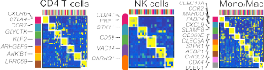
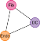
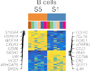
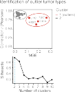
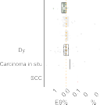

Resource
Atlas of clinically distinct cell states and ecosystems across human solid tumors
Graphical abstract
Highlights
d EcoTyper enables large-scale profiling of cell states and multicellular ecosystems
d Applicable to bulk, single-cell, and spatially resolved gene expression data
d A reference atlas of 69 cell states and 10 ecosystems across 16 types of carcinoma
d Carcinoma ecosystems have distinct biology, clinical outcomes, and spatial topology
Authors
Bogdan A. Luca, Chloe´ B. Steen, Magdalena Matusiak, ..., Matt van de Rijn, Andrew J. Gentles, Aaron M. Newman
Correspondence andrewg@stanford.edu (A.J.G.), amnewman@stanford.edu (A.M.N.)
In brief
EcoTyper, a machine learning framework for identifying and characterizing cell states and ecosystems from gene expression data, yields insights into the cellular landscape and community structure of human carcinoma, the leading cause of cancer-related mortality.
Luca et al., 2021, Cell 184, 5482–5496
October 14, 2021 ª 2021 Elsevier Inc.
https://doi.org/10.1016/j.cell.2021.09.014
Atlas of clinically distinct cell states
and ecosystems across human solid tumors
Bogdan A. Luca,1,4,9 Chloe´ B. Steen,2,3,4,9 Magdalena Matusiak,5 Armon Azizi,1 Sushama Varma,5 Chunfang Zhu,5 Joanna Przybyl,5 Almudena Espı´n-Pe´ rez,1 Maximilian Diehn,3,6,7 Ash A. Alizadeh,2,3,7,8 Matt van de Rijn,5
Andrew J. Gentles,1,4,7,* and Aaron M. Newman3,4,7,10,*
1Stanford Center for Biomedical Informatics Research, Department of Medicine, Stanford University, Stanford, CA 94305, USA
2Division of Oncology, Department of Medicine, Stanford University, Stanford, CA 94305, USA
3Institute for Stem Cell Biology and Regenerative Medicine, Stanford University, Stanford, CA 94305, USA
4Department of Biomedical Data Science, Stanford University, Stanford, CA 94305, USA
5Department of Pathology, Stanford University, Stanford, CA 94305, USA 6Department of Radiation Oncology, Stanford University, Stanford, CA 94305, USA 7Stanford Cancer Institute, Stanford University, Stanford, CA 94305, USA
8Division of Hematology, Department of Medicine, Stanford University, Stanford, CA 94305, USA
9These authors contributed equally
10Lead contact
*Correspondence: andrewg@stanford.edu (A.J.G.), amnewman@stanford.edu (A.M.N.) https://doi.org/10.1016/j.cell.2021.09.014
SUMMARY
Determining how cells vary with their local signaling environment and organize into distinct cellular commu- nities is critical for understanding processes as diverse as development, aging, and cancer. Here we intro- duce EcoTyper, a machine learning framework for large-scale identification and validation of cell states and multicellular communities from bulk, single-cell, and spatially resolved gene expression data. When applied to 12 major cell lineages across 16 types of human carcinoma, EcoTyper identified 69 transcription- ally defined cell states. Most states were specific to neoplastic tissue, ubiquitous across tumor types, and significantly prognostic. By analyzing cell-state co-occurrence patterns, we discovered ten clinically distinct multicellular communities with unexpectedly strong conservation, including three with myeloid and stromal elements linked to adverse survival, one enriched in normal tissue, and two associated with early cancer development. This study elucidates fundamental units of cellular organization in human carcinoma and pro- vides a framework for large-scale profiling of cellular ecosystems in any tissue.
INTRODUCTION
In cancer, complex communities of interacting cell types form powerful signaling networks that shape tumorigenesis (Bin- newies et al., 2018; Jackson et al., 2020; Keren et al., 2018; Schu¨ rch et al., 2020; Smith and Hodges, 2019). Targeted strate- gies for manipulating these networks are transforming cancer care, as exemplified by the success of immune checkpoint inhibitors (ICIs) in multiple advanced solid cancers (Ribas and Wolchok, 2018). However, response rates to current ICIs are het- erogeneous and most patients with solid tumors fail to achieve long-term clinical benefit (Galon and Bruni, 2019). A comprehen- sive understanding of tumor-associated cell states, their pat- terns of interaction, and their impact on clinical outcomes could facilitate new opportunities for disease management and thera- peutic intervention.
Previous studies have revealed broad phenotypic classes in human tumors, ranging from tumors that are T cell inflamed (‘‘hot’’) to those that are T cell depleted (‘‘cold’’) (Binnewies
et al., 2018). Such classifications can inform disease character- istics, including response to ICI, but oversimplify the cell types and cellular states of the tumor microenvironment (TME). In recent years, single-cell genomics, spatial transcriptomics, and multiplexed imaging have emerged as powerful technologies for obtaining high-resolution portraits of tumor cellular ecosys- tems directly from primary tissue specimens (Binnewies et al., 2018; Jackson et al., 2020; Keren et al., 2019; Schu¨ rch et al., 2020; Smith and Hodges, 2019). However, practical consider- ations have largely limited these assays to single tumor types, modestly sized sample cohorts, or small sets of phenotypic markers.
Here, we present EcoTyper, a machine learning framework for large-scale delineation of cell states and multicellular commu- nities from bulk tissue specimens. Our approach combines statistical learning techniques with recent advances in gene expression deconvolution (Newman et al., 2019) to illuminate multicellular ecosystems from bulk, single-cell, and spatially resolved gene expression data. To demonstrate the utility of

5482 Cell 184, 5482–5496, October 14, 2021 ª 2021 Elsevier Inc.
Figure 1. High-throughput characterization of tumor cell states and ecosystems
Schematic depicting the EcoTyper framework and its application to 16 types of human carcinoma (TCGA discovery cohort, Table S1). In this study, EcoTyper was applied within a multi-phase workflow, consisting of purification of cell-type-specific gene expression profiles from bulk tissue transcriptomic data, identification of transcriptional states for each purified cell type, and determination of co-occurrence patterns between cell states that define multicellular communities, termed ecotypes. Once cell states and ecotypes are defined, they can be queried in external expression datasets, including bulk transcriptomes, scRNA-seq data, and spatial transcriptomic arrays, allowing validation and integrative characterization.
See also Figure S1.
this framework, we constructed a global atlas of transcriptionally distinct cell states from 16 types of human carcinoma. We then defined cell-state co-occurrence patterns across nearly 6,000 tumors, identifying ten multicellular communities with wide- spread representation. We characterized our findings at the sin- gle-cell level; verified them in independent bulk tissue samples; and investigated their associations with genomic features, over- all survival, and ICI response. Finally, we interrogated the spatial organization of multicellular communities, including two with proinflammatory properties. This work reveals fundamental units of cellular organization in human carcinoma, with implications for novel diagnostics and individualized therapies.
RESULTS
The EcoTyper framework
We designed EcoTyper as a broadly applicable framework for high-throughput identification of cell states and multicellular communities from primary tissue specimens. It consists of three key steps: digital purification of cell-type-specific gene expres- sion profiles from bulk tissue transcriptomes, identification and quantitation of transcriptionally defined cell states, and co- assignment of cell states into multicellular communities (Figures 1 and S1A; STAR Methods).
EcoTyper starts by applying CIBERSORTx, a recently described approach for ‘‘digital cytometry,’’ to determine the abundance and gene expression profiles of individual cell types
within bulk tissue transcriptomes (Newman et al., 2019). By imputing the composition of major cell types within a collection of related tissue specimens, CIBERSORTx can mathematically purify gene expression profiles for multiple cell types of interest without single-cell sequencing or physical cell isolation. Notably, if cell-type-specific expression profiles are available from another source (e.g., single-cell or bulk-sorted transcriptomes), this step can be omitted. Second, EcoTyper employs statistical learning algorithms, including variants of unsupervised and su- pervised non-negative matrix factorization (NMF), to identify cell-type-specific transcriptional programs (‘‘cell states’’), quan- tify their relative abundance in each sample, and recover them in external expression datasets. As part of this workflow, EcoTyper implements an analytical strategy, adaptive false positive index (AFI), to eliminate spurious states without prior knowledge while maximizing sensitivity (STAR Methods). Third, EcoTyper deter- mines co-association patterns between cell states that form multicellular communities. In this work, a multicellular commu- nity is broadly defined as a collection of cell states that co-occur across independent tissue samples, agnostic to spatial neigh- borhoods. Such states may participate in diverse modes of communication, including contact-dependent interactions and indirect interactions mediated through diffusible secreted mole- cules (Armingol et al., 2021). EcoTyper can then query cell states and communities across datasets and platforms, allowing for large-scale assessment of tissue composition. Applications of EcoTyper include phenotyping and biomarker discovery from

Figure 2. The cell-state landscape across 16 carcinomas
Heatmaps showing digitally purified expression profiles of 12 cell types decoded from 16 bulk epithelial tumor types, with genes as rows and tumor/adjacent normal tissue samples as columns. Heatmaps are organized by the most abundant cell state per sample.
UMAP projection of cell-state heterogeneity across tumor and adjacent normal specimens in the discovery cohort. Points are colored by the most abundant cell state per sample, with states colored identically to (A) (gray denotes S9).
(legend continued on next page)
Atlas of transcriptionally defined cell states in 16 carcinomas
To demonstrate the capabilities of EcoTyper, we used it to gain insights into human carcinoma, the leading cause of cancer deaths worldwide (Siegel et al., 2020) and a class of malig- nancies for which extensive genomic and clinical data are pub- licly available. As carcinomas originate from epithelial cells, we started by selecting 12 cell types that together span the majority of immunological and structural cells found in human epithelial tumors: B cells, plasma cells, CD8 T cells, CD4 T cells, natural killer (NK) cells, monocytes/macrophages, dendritic cells, mast cells, neutrophils, fibroblasts, endothelial cells, and epithelial cells. We then assembled a collection of cell-type-specific gene expression signatures to discriminate each cell type using CIBERSORTx. For this purpose, we took advantage of previ- ously published gene expression signatures (Newman et al., 2015, 2019), each with extensive validation data supporting their analytical performance for deconvolving solid tumors, including carcinomas (Figures S1B and S1C; STAR Methods).
We next explored the impact of key parameters on EcoTyper deconvolution, including cell-state abundance and collinearity of cell-state fractions (Figure S1D; STAR Methods). We applied EcoTyper to 500 simulated tumors constructed of admixtures of single-cell RNA sequencing (scRNA-seq) data from individ- uals with non-small cell lung cancer (NSCLC) (Figure S1E). Eco- Typer showed strong deconvolution performance on 26 known cell states across a range of input fractions (mean of 0.5%– 10%), both for cell-state identification (sensitivity = 0.92, positive predictive value = 0.86) and enumeration (median Pearson r = 0.93 between known and predicted proportions; Figures S1F–S1H). Moreover, it achieved a limit of detection of
~0.5% mean fractional abundance while also demonstrating the capability to resolve states with correlated abundance pat- terns (r % 0.6; Figures S1I and S1J).
Next, we compiled a discovery cohort consisting of 16 types of human carcinoma spanning 5,946 tumor and 529 adjacent normal transcriptomes profiled by the Cancer Genome Atlas (TCGA) (Tatlow and Piccolo, 2016) (Figure 1; Tables S1 and S2). These datasets were selected to maximize the consistency of specimen handling and processing, the accuracy of imputed cell fractions against orthogonal measures, the uniformity of expression levels across housekeeping genes, and the availabil-
ity of both genomic data and clinical follow-up for each bio- specimen (Figures S1C, S1K, and S1L; Table S2). Applied to these data, which were uniformly processed and standardized, EcoTyper produced a matrix of 77,700 digitally purified expres- sion profiles, one for each evaluated cell type and patient sample (i.e., 12 cell types 3 6,475 samples) (STAR Methods).
The size and scope of this expression matrix provided an op- portunity to identify and validate tumor-associated cell states that are shared across cancers. First, we confirmed that all profiles showed strong evidence of cell-type specificity by com- parison to reference profiles derived from scRNA-seq data (Fig- ure S2A). Next, we applied EcoTyper to model each digitally purified sample as a linear combination of discrete transcrip- tional programs (Figure S2B). In this way, purified samples were treated as bulk-sorted populations, allowing multiple tran- scriptional states per cell type to coexist per sample (e.g., Fig- ures S1G and S1H; STAR Methods).
After initial quality-control filtering (STAR Methods), EcoTyper yielded 71 discrete cell states, ranging from 3 to 9 states per cell type (Figures 2A, 2B, and S2B–S2E). Most states were ubiqui- tous across carcinomas and significantly enriched in malignant tissue, highlighting key commonalities independent of tumor site (Figure S2F; Table S3). Nevertheless, many states also var- ied in their histological or clinical distribution. For example, mul- tiple transcriptional programs distinguished neoplastic from adjacent normal tissues or adenocarcinomas from squamous cell carcinomas (Figure S2F; Table S3). We also observed funda- mental differences with respect to cell lineage and tumor type: epithelial states showed the strongest specificity for particular tumor types, followed by fibroblasts, endothelial cells, myeloid cells, and lymphocytes (Figures S2G and S2H; Table S3).
EcoTyper implements a supervised framework for reference- guided annotation, in which cell states learned in one dataset can be identified and statistically evaluated in another (STAR Methods). To assess the fidelity of the 71 cell states defined by EcoTyper, we queried the presence of each state in ~200,000 single-cell transcriptomes covering four types of human carci- noma: breast cancer (BRCA) (Azizi et al., 2018), colorectal cancer (CRC) (Lee et al., 2020), head and neck squamous cell carcinoma (HNSCC) (Puram et al., 2017), and NSCLC (Guo et al., 2018; Lambrechts et al., 2018; Laughney et al., 2020; Zilio- nis et al., 2019) (Table S1). In all, 94% of cell states (67 of 71) were significantly recoverable in scRNA-seq data using reference- guided annotation coupled with permutation testing (Table S3; STAR Methods). The recovery rate remained high regardless of platform, cell type, or dataset, underscoring the robustness of our results (Figures S3A–S3C; Table S3). Moreover, we observed

Expression of cell-state-specific marker genes (rows) across seven scRNA-seq datasets (columns) spanning four types of carcinoma (Tables S1 and S4). Asterisks indicate cell states omitted from further analysis that were not distinguishable from potential doublets in scRNA-seq data.
Enrichment of EcoTyper states in adjacent normal tissue, comparing the discovery cohort to an scRNA-seq tumor atlas (Lambrechts et al., 2018). In both cases, tumor and adjacent normal tissues from NSCLC were analyzed. Concordance was determined as the fraction of states with significant normal enrichment in both datasets, with significance determined by Fisher’s exact test.
Top: H&E staining of colorectal cancer (CRC) specimens with high (arrows, left) versus low (right) levels of foam cell macrophages. Bottom: Analysis of monocyte/macrophage marker genes (EcoTyper) in bulk RNA-seq profiles of laser micro-dissected stroma from CRC 393 and 380 (above) as well as another foam cell-depleted CRC tumor (CRC 406). Enrichment was calculated by pre-ranked gene set enrichment analysis applied to the log2 fold change of foam cell- high (n = 3) versus foam cell-low (n = 3) RNA-seq profiles (Table S1). The scale bar (100 mm) is identical for both images.
strikingly reproducible marker gene expression across all seven scRNA-seq tumor atlases, with a leave-one-out cross-validation rate of 90% (Figure 2C; Table S3). Based on these assessments, we selected 69 of 71 states for further analysis, omitting 2 that mapped to potential doublets in scRNA-seq data (endothelial cells state 3, fibroblasts state 7; Figure S2B).
As an alternative validation approach, we also tested whether states enriched in particular biological groupings (e.g., normal tissues) were recapitulated at the single-cell level. Indeed, after mapping single-cell transcriptomes to EcoTyper states, we observed significant concordance for states enriched in adja- cent normal tissues, adenocarcinomas, or squamous cell carci- nomas (Figures 2D and S3D; Table S3). Moreover, compared to other reference-guided annotation tools for supervised scRNA- seq classification, EcoTyper exhibited superior performance (Figures S3E–S3G).
We next annotated each state by comparison to known tran- scriptional programs, prominently expressed marker genes, and states defined by previous scRNA-seq studies (Table S4). Approximately two-thirds of EcoTyper states were attributable to genes or phenotypes established in prior literature (Table S4). For example, without prior knowledge, EcoTyper identified ANGPTL2+/NID2+ tip-like endothelial cells implicated in tumor neovascularization (Kadomatsu et al., 2014; Zhao et al., 2018); two fibroblast states previously described in HNSCC (Puram et al., 2017) (CAF1 and CAF2; Figure 2A); an epithelial cell subset (state 3) with hallmarks of partial EMT (Figures S3H and S3I; Table S4); and canonical T cell subsets associated with pre- effector, exhaustion, and resting phenotypes (CCR7+, LAG3+, KLF2+, respectively; Figure 2C; Table S4). EcoTyper also re- vealed insights into cell types with poorly understood plasticity in cancer. For example, among cells of the monocyte/macro- phage lineage, which have emerging roles in cancer immuno- therapy (Feng et al., 2019), EcoTyper reconstructed nine in vivo phenotypes with broad representation, including states consis- tent with pro-inflammatory monocytes (CCR2+), classical M0 macrophages (FABP4+), and M1 macrophages (CXCL9+) (Fig- ures 2C and S3J; Table S4). Four candidate subtypes of M2- like macrophages were also detectable (states 4–7), including states expressing known M2 marker genes such as CD209 and CD163 (state 4), S1PR1 (state 5), and CHI3L2 (state 7) (Fig- ure 2C; Table S4) (Murray and Wynn, 2011; Tong et al., 2020; Weichand et al., 2017).
Importantly, nearly one-third of EcoTyper states appeared to be novel or not previously identified by scRNA-seq surveys of human carcinomas (Table S4). For example, among M2-like macrophages, we identified an AEBP1+ population (state 6) with marked similarity to foamy macrophages (Majdalawieh et al., 2006), a lipid-laden phenotype frequently associated with atherosclerotic plaques (Moore et al., 2013) but whose rele- vance across carcinomas is unclear (Figure S3J; Table S4). To corroborate this state, we performed bulk RNA-seq of stromal cells isolated from formalin-fixed paraffin-embedded human CRC tumor biopsies with high and low foamy macrophage con- tent based on H&E staining (Figure 2E, top; STAR Methods). Indeed, of nine monocyte/macrophage states identified by Eco- Typer, state 6 was uniquely enriched in foamy macrophage-rich stroma, supporting our result (Figure 2E, bottom).
Global view of cell-state prognostic associations
We and others have previously shown that cell-type-specific reference profiles derived from external sources, including bulk-sorted populations and scRNA-seq data, can predict can- cer clinical outcomes (Gentles et al., 2015; Li et al., 2016; New- man et al., 2019; Rooney et al., 2015). However, the prognostic impact of context-dependent cell states in human carcinoma is largely unknown. We therefore leveraged the unique output of EcoTyper to chart the prognostic landscape of 69 cell states across 15,008 tumors.
In the 16 epithelial cancer types surveyed in our discovery cohort, the majority of cell states (39 of 69) were significantly associated with overall survival (Figure 3A), and 49% (n = 34) were significant in multivariable analyses incorporating stage, age, and sex (Table S5). Global survival associations dichoto- mized nearly all evaluated cell types into favorable and adverse states, highlighting their biological and clinical heterogeneity (Figure 3A). For example, macrophage subsets annotated as M1 (state 3) and M2 (states 4–7) were associated with longer and shorter survival time, respectively, as found in prior studies (Mehla and Singh, 2019) (Figure 3A). Surprisingly, among M2- like states, AEBP1+ foamy macrophages were among the top five determinants of adverse survival, suggesting that foam cells could have widespread relevance as an immunotherapeutic target in cancer (Figure 3A). Other notable states associated with adverse risk included CA9+ fibroblasts (state 8) and POSTN+ fibroblasts (state 3), both of which have been implicated in tumor invasiveness (Fiaschi et al., 2013; Gonza´ lez-Gonza´ lez and Alonso, 2018), and pro-angiogenic tip-like endothelial cells (state 2) (Figures 3A and S4A; Table S5). Specific leukocyte pop- ulations dominated favorable outcomes across carcinomas, with leading states including CCR7+ naive/central memory CD4 T cells, CD247+ NK cells, CD27+ plasma cells, and XCR1+ cDC1-like dendritic cells, which are associated with CD8 T cell priming (Sa´ nchez-Paulete et al., 2017) (Figures 3A and S4A; Table S5).
To determine the generalizability of these results, we applied EcoTyper to quantitate all 69 cell states in an independent cohort of 9,062 epithelial tumor transcriptomes profiled by microarray (PRECOG), for which overall survival data are available (Gentles et al., 2015) (Figure S4B). First, we confirmed that EcoTyper is robust to platform-specific variation between bulk RNA-seq and microarrays (Figure S4C). Next, we calculated state-specific survival associations in the PRECOG database, as measured by weighted Z scores. Remarkably, survival associations were highly concordant between TCGA and PRECOG (Pearson r = 0.73, p = 1.2 3 10—12; Figures 3B and S4D), corroborating our findings and emphasizing the extensibility of EcoTyper to new datasets. We also observed high concordance for individual tu- mor types, such as colon, ovarian, and gastric cancers, for which

Figure 3. Cell-state-specific survival associations across 15,008 tumors
Survival associations of 69 cell states in 5,946 tumors (discovery cohort), stratified by cell type and aggregated across malignancies. Marker genes for the most significant adverse and favorable states are indicated. See also Figure S4A and Table S5.
State-specific survival associations in the discovery cohort (TCGA) and an independent cohort of 9,062 epithelial tumor transcriptomes (PRECOG). Concordance and statistical significance were assessed by Pearson correlation (see also Figure S4D).
Kaplan-Meier plots showing differences in overall survival between patients with high levels of M1-like macrophages (state 3) or M2 foamy-like macrophages (state 6) in three types of carcinoma. TCGA tumors were stratified by the median difference between M1 and M2 foamy-like macrophages; thresholds determined in TCGA were applied to PRECOG. Statistical significance was calculated by a two-sided log-rank test. HR, hazard ratio. 95% HR confidence intervals are shown in brackets.
See also Figure S4.
M1 and M2 foamy-like macrophages predicted longer and shorter survival time, respectively (Figure 3C).
Large-scale reconstruction of multicellular communities in vivo
Tumors are complex ecosystems comprised of spatially and temporally linked cell states. To determine whether EcoTyper
can reconstruct multicellular ecosystems, we devised a data- driven approach for clustering cell states based on patterns of co-occurrence and mutual avoidance (STAR Methods). By applying this approach to tumor samples in the discovery cohort (69 states 3 5,946 tumors), we identified ten strikingly cohesive cellular communities, which we termed ‘‘carcinoma ecotypes’’ (CEs) (Figures 4A, 4B, S5A, and S5B). CEs ranged from 3 to 9



Figure 4. Large-scale reconstruction of multicellular communities in vivo
Cell-state abundance profiles across 16 carcinomas, organized into ten carcinoma ecotypes (CEs). Only cell states and tumor samples assigned to CEs are shown (related to Figures S5A and S5B). Tumor samples are ordered by the most abundant CE class per specimen.
CE composition depicted as network diagrams. The width of each edge represents the Jaccard index across tumor samples (STAR Methods).
(C–E) Validation of CEs in scRNA-seq profiles. (C) Overview of the approach. (D) Heatmaps portraying co-occurrence relationships among cell-state abundance profiles, both in the discovery cohort (left) and in six scRNA-seq atlases spanning BRCA, CRC, HNSCC, and NSCLC (right; Table S1). Only tumor types matching those analyzed by scRNA-seq are shown. Cell-state fractions were analyzed to assess co-occurrence relationships. All states are grouped into predefined CEs (B), and only states assigned to CEs are shown (n = 58). Significantly recoverable CEs are indicated above the heatmaps (*p < 0.05). ‘‘Co-occurrence index’’ is a measure of covariance that accounts for noise (STAR Methods). (E) Composition of selected CEs in a subset of samples profiled by scRNA-seq for which each CE is highest. Cell types within each CE are distinguished by color; cell states can be distinguished by matching each CE and cell type with the corresponding node in (B).
See also Figure S5.
distinct cell states per community (Figures 4A and 4B), were robustly recovered independent of clustering approach (Figure S5C), largely ubiquitous across human carcinomas (Fig- ure 4A), and highly distinct from recently described immunolog- ical subtypes in TCGA (Thorsson et al., 2018) (Figure S5D). More- over, by aggregating across cell-state abundance profiles, CE composition could be assessed in a continuous manner. While nearly every tumor sample had a dominant CE (Figure 4A), most tumors were comprised of multiple CEs, highlighting modularity in neoplastic tissue composition (Table S6).
To authenticate these results, we performed three technical experiments. First, we tested whether CEs are reproducible across platforms and independent datasets. Indeed, in 395 human carcinoma specimens profiled by both RNA-seq and microarrays, estimated CE levels were significantly correlated
between platforms (Figure S5E). Moreover, by performing dimensionality reduction with UMAP on cell-state abundance profiles, we observed nearly identical community structure in > 6,000 held-out epithelial tumors (Gentles et al., 2015) (Fig- ure S5F). Second, we tested whether CEs are enriched for cell states with potential for interaction, both within and across eco- types. When compared to background expectations, 60% of CEs were significantly enriched in ligand-receptor pairs, with multiple CE pairs also showing evidence of inter-ecotype inter- action (Figure S5G; Table S6).
Given these results, we next asked whether the ten CEs are detectable in single-cell data. Using the scRNA-seq compen- dium described above, which includes ~200,000 single-cell transcriptomes encompassing 76 tumor and 21 adjacent normal specimens from four carcinomas, we assigned individual cells to
EcoTyper states (Figure 4C). We then determined the fractional abundance of each state within each tumor/normal sample and subsequently grouped cell states into the same CE classes defined by EcoTyper (Figures 4C–4E). Finally, we determined whether states assigned to the same CE are more strongly co- associated than expected by random chance (Figure 4C). In all, 80% of CEs were significantly detectable in scRNA-seq data at p < 0.05. Moreover, 90% were detectable at p < 0.06 (Fig- ure 4D). This result was striking given potential confounding fac- tors in scRNA-seq data that could obscure CE detection, including modest sample sizes, low cell numbers per sample, sparsity in gene expression, and dissociation-induced distor- tions (Figure S5H). As an alternative approach, we determined the joint probability of obtaining ten CEs with equally strong co-associations by random chance. Relative to background expectations, the probability of obtaining our original result by random chance was less than 1 in 1,000,000 (p < 10—6; Figure S5I).
Taken together, these data validate our approach, identify distinct multicellular communities in bulk and single-cell expres- sion data, and nominate CEs as fundamental units of cellular organization across human carcinomas.
Carcinoma ecotype characteristics in 6,000 normal and neoplastic tissue specimens
Having identified ten dominant multicellular ecosystems in carci- noma, we next explored their cellular, genomic, and clinical char- acteristics (Figure 5A; Table S6). Across the discovery cohort, eight CEs were significantly prognostic in univariable models, and five remained significant after multivariable adjustments for stage, age, and sex (Figure 5A; Table S6). CE1- and CE2- high tumors were lymphocyte deficient, strongly linked to higher risk of death, and broadly distinguished by elevated levels of POSTN+ fibroblasts and basal-like epithelial cells, respectively (Figures 4B and 5A). CE3-high tumors, predictive of worse sur- vival outcome, were myeloid enriched, microsatellite instability (MSI) high (Table S6), and associated with COSMIC mutational process 17, a signature found in multiple tumor types including esophageal and gastric cancers, where it has been linked, at least in part, to gastric reflux (Christensen et al., 2019). CE4- high tumors were associated with myogenesis and males over 60 years of age (in part owing to their higher prevalence in HNSCC and prostate cancer), whereas CE5- through CE8-high tumors were enriched for smoking-related mutations, normal tissue, age-related mutations, and moderately favorable out- comes, respectively. Finally, CE9- and CE10-high tumors were proinflammatory (i.e., leukocyte rich), strongly associated with longer overall survival, and characterized by higher immunore- activity, including IFN-g signaling, and higher B cell content, respectively. Notably, two CEs were present at similar fre- quencies in tumor and adjacent normal tissues but depleted in healthy tissues (CE4, CE10), reflecting a potential field effect. Others, with the exception of CE6, were largely specific to neoplastic tissue (Figure 5B). Additional CE-specific features, including expressed ligand/receptor pairs and signaling path- ways, are provided in the supplemental information and can be interactively explored online (Table S6; https://ecotyper. stanford.edu).
Multicellular prediction of overall survival and immunotherapy response
Since each carcinoma ecotype integrates contributions from multiple cell states, we reasoned that CE profiling might have the potential to improve clinical outcome prediction. To test this possibility, we first compared CEs against two molecular subtyping schemes for predicting overall survival in the discov- ery cohort: bulk NMF clustering and a collection of six pan-can- cer immune subtypes defined by TCGA (Thorsson et al., 2018). The former was selected to assess the merit of EcoTyper decon- volution while the latter was selected as a comparator for TME classification. While bulk NMF subtypes were largely limited to heterogeneity in epithelial cells (Figure S5J), pan-immune sub- types showed relatively modest prognostic associations (Table S6). In contrast, CEs showed distinct advantages in all compar- ative analyses that we performed, both in terms of CE-specific survival associations and in multivariable survival models adjusted for bulk NMF and pan-immune subtypes (Figures S5K and S5L; Table S6).
Next, we asked whether CEs can predict immunotherapy response. To this end, we compiled tumor expression data from 571 individuals with advanced metastatic disease prior to receiving immune checkpoint blockade with anti-PDL1 (urothe- lial carcinoma), anti-PD1 (melanoma), or anti-CTLA4 (melanoma) monotherapy (Liu et al., 2019; Mariathasan et al., 2018; Nathan- son et al., 2017; Riaz et al., 2017; Van Allen et al., 2015). We included metastatic melanoma in this analysis as most non- epithelial cell states reliably generalized to this disease (Table S6). To quantify performance, we evaluated continuous associ- ations with overall survival and binary associations with immuno- therapy response. CE9, which is characterized by IFN-g signaling, outperformed other CEs for predicting superior out- comes across therapy types and outcome measures (Figure 5C). We also compared CE profiling to 112 candidate biomarkers, including 69 cell states quantitated by EcoTyper, 25 parental populations enumerated by CIBERSORTx, tumor mutational burden (TMB), and 2 published bulk signatures of ICI response (Cristescu et al., 2018; Jerby-Arnon et al., 2018). Surprisingly, CE9 abundance surpassed all other measures including those trained to predict ICI response (Figure 5C; Table S6). Together these data suggest that multicellular communities, even in the absence of optimization, can capture biological signal with supe- rior predictive value.
Spatiotemporal dynamics of proinflammatory communities
We next sought to determine whether carcinoma ecotypes show distinct patterns of spatial organization. To do so, we largely focused on CE9 and CE10, two proinflammatory communities with canonical T cell states and favorable overall survival but otherwise disparate genomic and cellular features (Figure 5). CE9-T cell states express activation and immunoregulatory genes, including markers of exhaustion, consistent with the as- sociation of CE9 with ICI response (e.g., LAG3 in CD8 T cell S3 and CTLA4 in CD4 T cell S1). In contrast, CE10-T cells express markers of naive and central memory cells (e.g., CCR7) (Fig- ure 6A). Although such differences are well documented in tu- mor-associated T cells (Guo et al., 2018; Oh et al., 2020; Zheng


Figure 5. Carcinoma ecotype characteristics and association with immunotherapy response
Characteristics of carcinoma ecotypes in the discovery cohort. Top: CE-specific survival associations across 16 carcinomas, colored by favorable (blue) or adverse (red) survival (color scale identical to Figure S4A). Center: CIBERSORTx-inferred proportions of 12 major cell types (averaged and scaled), grouped by the most abundant CE per tumor. Bottom: Key features of each CE. Enrichment statistics were calculated by dividing tumors into classes for which the indicated CE is highest (Table S6).
CE composition in normal tissues (GTEx), adjacent normal samples (discovery cohort), and primary tumor specimens (discovery cohort). Pan-carcinoma survival associations are also indicated. ns, not significant.
Association of 122 features with overall survival and ICI response in 571 individuals with advanced melanoma (Mel.) or bladder cancer (BLCA). Results are ordered top to bottom by performance across therapies and outcome measures (Table S6).
See also Figure S5.
et al., 2017), their precise cellular communities have not been previously established. With EcoTyper, we found that CE9-T cells strongly co-occur with six cellular states, including ones resembling M1 macrophages, mature immunogenic dendritic cells, and activated B cells. Conversely, CE10-T cells co-occur with five cellular states, including those consistent with pro-in- flammatory monocytes, cDC1 dendritic cells, and naive/resting B cells (Figures 4B and 6A; Table S4). These results were
To check whether CE-specific phenotypes are spatially distinct, we first performed multicolor immunofluorescence (IF) staining for GZMB and GZMK (Figures 6B and S6A; Table S6), which respectively mark CE9 and CE10-T cells (Figure 6A). In

(legend on next page)
cancer, GZMB and GZMK have been observed to distinguish activated effector and transitional effector memory T cells, respectively (Larkin et al., 2019; Oh et al., 2020; Zheng et al., 2017). We applied EcoTyper to 23 bulk tumor transcriptomes from patients with NSCLC (Gentles et al., 2020) and selected four specimens with divergent CE9 and CE10 composition. Mul- tiplexed staining of these specimens verified EcoTyper predic- tions (Figure S6B; Table S6). Additionally, while GZMB+ T cells were localized to the tumor core, consistent with a link between chronic antigen stimulation and T cell exhaustion (Wherry and Kurachi, 2015), GZMK+ T cells were largely excluded, instead localizing to the periphery (Figures 6B, top, and S6A; Table S6). To extend our analysis beyond T cells, we further applied IF imaging to APOE+/CD68+ and CCR2+/CD68+ cells, which respectively mark CE9- and CE10-enriched states within the macrophage/monocyte lineage (Figures 6A and S6C). Using tumor specimens from the above analysis, we confirmed that relative cell-state abundances, as determined by IF, were concordant with those determined by EcoTyper (Figure S6B). As observed for T cells, APOE+/CD68+ cells localized to the tu- mor core, whereas CCR2+/CD68+ cells localized to the periphery (Figures 6B, bottom, and S6C). These findings were consistent with EcoTyper deconvolution of a human breast carcinoma specimen profiled by in situ spatially barcoded microarray data (10x Visium), regardless of whether we analyzed individual cell states (Figure S6D) or the entire cellular community (Figure 6C, top). Moreover, spatial differences between ecotypes were high- ly significant with regard to distance from tumor cells (Figure 6C, right), a finding that was extensible to a melanoma specimen
(Figure 6C, bottom).
To determine whether additional cell types and cancers show evidence of CE-specific colocalization patterns, we next explored cell-state co-associations in breast cancer, colorectal cancer, ovarian cancer, and melanoma samples profiled by spatial transcriptomics (Figure 6D). We found that cell states generally colocalize in a CE-specific manner regardless of devel- opmental lineage or cancer type (Figures 6E and S6E). These patterns were also evident by visual inspection (Figure S6D, left). To quantify CE spatial organization, we applied Moran’s I, a statistical measure of spatial autocorrelation (Moran, 1950). We found that some CEs were highly spatially aggregated (CE1, CE9, CE10) whereas others were more dispersed (CE4,
CE5, CE3) (Figures S6F and S6G). Nevertheless, nearly two- thirds of CEs were spatially enriched in CE-specific ligand-re- ceptor pairs identified in the discovery cohort (Figure S6H; Table S6), implying that most CEs, including CE9 and CE10, occur in spatially distinct cellular neighborhoods with enhanced interac- tion potential.
Given these results, coupled with the observation that CE10 is generally further from the tumor core than CE9 and also present in adjacent normal tissue (Figure 5B), we hypothesized that CE10 precedes CE9 during early tumor development. Consistent with this, we found that CE10 was more prevalent than CE9 during the earliest stages of squamous cell lung carcinogenesis, whereas in malignant tissue, CE9 was more prevalent than CE10 (Fig- ure S6I). Moreover, in precancerous lesions of lung squamous cell carcinoma collected from 33 subjects with known outcomes (Teixeira et al., 2019), higher relative levels of CE10 were signifi- cantly associated with spontaneous regression, whereas higher relative levels of CE9 predicted progression to invasive cancer (area under the curve = 0.82; Figure 6F). Together these data further validate our approach, link CE dynamics to early lung cancer development, and provide a platform to systematically interrogate the diagnostic and therapeutic potential of tumor cellular ecosystems.
DISCUSSION

Figure 6. Proinflammatory communities are spatially distinct and predictive of early lung cancer development
Heatmaps displaying differentially expressed genes between CE9 and CE10 in seven scRNA-seq tumor datasets (Table S1), shown for cell types present in both CEs. For each dataset and cell state, mean scaled expression is shown (STAR Methods).
Immunofluorescence imaging of CE9- and CE10-specific T cell states (DAPI, CD3, and GZMB or GZMK) and monocyte/macrophage states (DAPI, CD68, and APOE or CCR2) in NSCLC specimens (T29, T36) with paired bulk RNA-seq data (Figures S6A and S6C; Table S6). CE9 and CE10-specific marker genes are highlighted in (A). Images correspond to boxed regions in Figures S6A and S6C. Scale bar of 20 mm is identical for all images. ‘‘Center’’ refers to the tumor core; ‘‘Edge’’ refers to the periphery of the tumor mass.
Left: Distribution of CE9 and CE10 in breast tumor and melanoma sections profiled by spatial transcriptomics. Tumor regions are demarcated by a dashed line. Right: Relative distance of CE9- and CE10-positive spots from tumor regions.
Schema for quantifying spatial colocalization of CE-specific cell states.
Significance of cell-state colocalization within individual CEs, as measured across four tumor types (Table S1).
Left: Schema illustrating clinical outcomes of 33 subjects for whom premalignant lung lesions were profiled by microarray (Teixeira et al., 2019) and assessed for CE9 and CE10 by EcoTyper. Right: Relative abundance of CE9 versus CE10 in premalignant lung lesions, stratified by clinical outcome. Group comparisons in
(C) and (F) were performed using a two-sided unpaired Wilcoxon rank sum test. Data in (C) right, (E), and (F) are represented as box plots (center line, median; box limits, upper and lower quartiles; whiskers, largest and smallest values within 1.5 3 IQR of the box limits; IQR, interquartile range).
See also Figure S6.
While recent studies have revealed critical insights into tumor cellular communities using multiplexed imaging, these studies focused on single tumor types using a limited number of prede- fined phenotypic markers (Jackson et al., 2020; Keren et al., 2018; Schu¨ rch et al., 2020; Smith and Hodges, 2019). By deploy- ing EcoTyper to analyze 16 types of human carcinoma spanning nearly 6,000 bulk tumor transcriptomes, we uncovered 69 tran- scriptionally defined cell states and ten previously unknown multicellular communities in a marker-agnostic manner. In doing so, we characterized multicellular communities at the transcrip- tional level across thousands of solid tumors, corroborated them in scRNA-seq data, and assessed their associations with ICI response and early cancer development. These data and asso- ciated analytical tools provide new opportunities for the develop- ment of diagnostic and therapeutic strategies that rely upon knowledge of tumor-associated cell states and their patterns of multicellular interaction.
Limitations of the study
Despite the promise of EcoTyper, several challenges remain. For example, EcoTyper requires expression profiles that distinguish major cell types within a tissue type of interest, regardless of whether such profiles are used for expression deconvolution or directly for cell-state discovery. Given the rapid pace of single- cell sequencing efforts (e.g., Human Tumor Atlas Network [Rozen- blatt-Rosen et al., 2020]), this requirement is unlikely to be a major hurdle for most applications. Second, not all cell states are resolv- able by EcoTyper, either because they fall beneath the lower limit of detection, are not definable from the genes detected in cell- type-specific expression profiles, or exhibit nearly perfect covari- ance with other cell states (Figures S1D–S1J). Approaches to over- come these issues, such as hierarchical variants of NMF that can resolve nested cell states, are currently being investigated.
STAR+METHODS
Detailed methods are provided in the online version of this paper and include the following:
B Lead contact
B Materials availability
B Data and code availability
d EXPERIMENTAL MODEL AND SUBJECT DETAILS
B Human subjects
B EcoTyper framework
B Signature matrix validation
B Validation of expression purification
B Assessment of EcoTyper using simulated tumors
B External datasets
B UMAP visualization of cell states
B Enrichment of cell states in known phenotypes B Comparison of scRNA-seq annotation methods B State-specific marker genes in scRNA-seq data B Validation of scRNA-seq markers
B Cell state representation by tumor type
B Enrichment of EMT genes in epithelial states
B Annotation of monocyte/macrophage states
B Laser capture microdissection and bulk RNA-seq
B Immunohistochemistry
B Survival analyses and bulk tumor subtyping
B Prediction of immunotherapy response
B CE network visualization
B Ligand-receptor enrichment analysis
B CE recovery in scRNA-seq data
B Feature analysis of carcinoma ecotypes
B State-specific expression in CE9 and CE10
B Multicolor immunofluorescence imaging
B Analysis of spatial transcriptomics data
d QUANTIFICATION AND STATISTICAL ANALYSIS
B Website
SUPPLEMENTAL INFORMATION
Supplemental information can be found online at https://doi.org/10.1016/j.cell. 2021.09.014.
ACKNOWLEDGMENTS
The authors would like to acknowledge A. Chaudhuri, E. Brown, G. Gulati, A. Usmani, and S. Sikandar for their critical feedback. This work was supported by the Fund for Cancer Informatics (A.J.G., M.D.), the American Association for Cancer Research (C.B.S., 19-40-12-STEE), the National Cancer Institute (A.M.N., R01CA255450 and R00CA187192; A.J.G., U54CA209971 and U24CA224309; A.A.A. and M.D., R01CA233975; M.V.D.R., R01CA229529),
the Bakewell Foundation (M.D., A.A.A.), the SDW/DT and Shanahan Family Foundations (A.A.A.), the Stinehart-Reed Foundation (A.A.A., A.M.N.), the Vir- ginia and D.K. Ludwig Fund for Cancer Research (A.A.A., A.M.N.)., the Stan- ford Bio-X Interdisciplinary Initiatives Seed Grants Program (IIP) (A.M.N.), and the Donald E. and Delia B. Baxter Foundation (A.M.N.).
AUTHOR CONTRIBUTIONS
B.A.L., C.B.S., A.J.G., and A.M.N. conceived of the study, developed strate- gies for related experiments, and wrote the paper. B.A.L. and C.B.S. devel- oped and implemented EcoTyper and analyzed the data with assistance from A.J.G. and A.M.N. M.M. designed and performed immunohistochem- istry experiments and related data analysis with assistance from J.P. and
M.V.D.R. M.M. designed and performed laser capture microdissection, li- brary preparation, and sequencing experiments with assistance from C.Z.
B.A.L. and A.A. implemented web infrastructure. A.E.P. assisted with data analysis. M.D. assisted in the collection and expression profiling of patient specimens. A.A.A. contributed to the conceptual development of EcoTyper and assisted with data interpretation. M.V.D.R. procured tissue specimens and assisted in data interpretation. All authors commented on the manuscript at all stages.
M.D. reports research funding from Varian Medical Systems and Illumina; ownership interest in CiberMed and Foresight Diagnostics; patent filings related to cancer biomarkers; and paid consultancy from Roche, AstraZeneca, RefleXion and BioNTech. A.A.A. is a member of the Cell advisory board and reports research support from Bristol Meyers Squibb; ownership in- terest in CiberMed, FortySeven Inc., and Foresight Diagnostics; patent filings related to cancer biomarkers; and paid consultancy from Genentech, Roche, Chugai, Gilead, and Celgene. A.M.N. reports ownership interest in CiberMed and patent filings related to cancer biomarkers. B.A.L., C.B.S., A.A.A., A.J.G., and A.M.N. have filed patent application PCT/US2020/059196. The re- maining authors declare no potential conflicts of interest.
Received: November 19, 2020
Revised: June 21, 2021
Accepted: September 8, 2021
Published: September 30, 2021
REFERENCES
Abdelaal, T., Michielsen, L., Cats, D., Hoogduin, D., Mei, H., Reinders, M.J.T., and Mahfouz, A. (2019). A comparison of automatic cell identification methods for single-cell RNA sequencing data. Genome Biol. 20, 194.
Aiello, N.M., Maddipati, R., Norgard, R.J., Balli, D., Li, J., Yuan, S., Yamazoe, T., Black, T., Sahmoud, A., Furth, E.E., et al. (2018). EMT subtype influences epithelial plasticity and mode of cell migration. Dev Cell 45, 681–695.e4.
Aran, D., Camarda, R., Odegaard, J., Paik, H., Oskotsky, B., Krings, G., Goga, A., Sirota, M., and Butte, A.J. (2017). Comprehensive analysis of normal adja- cent to tumor transcriptomes. Nat. Commun. 8, 1077.
Armingol, E., Officer, A., Harismendy, O., and Lewis, N.E. (2021). Deciphering cell-cell interactions and communication from gene expression. Nat. Rev. Genet. 22, 71–88.
Azizi, E., Carr, A.J., Plitas, G., Cornish, A.E., Konopacki, C., Prabhakaran, S., Nainys, J., Wu, K., Kiseliovas, V., Setty, M., et al. (2018). Single-Cell Map of Diverse Immune Phenotypes in the Breast Tumor Microenvironment. Cell 174, 1293–1308.36.
Bifulco, C., Capone, M., Feng, Z., Madonna, G., Simeone, E., Curvietto, M., Mozzillo, N., Ciliberto, G., Botti, G., Fox, B.A., et al. (2014). MISIPI study: Mel- anoma ImmunoScore evaluation in patients treated with IPIlimumab. J. Transl. Med. 12, 11.
Binnewies, M., Roberts, E.W., Kersten, K., Chan, V., Fearon, D.F., Merad, M., Coussens, L.M., Gabrilovich, D.I., Ostrand-Rosenberg, S., Hedrick, C.C., et al. (2018). Understanding the tumor immune microenvironment (TIME) for effec- tive therapy. Nat. Med. 24, 541–550.
Blondel, V.D., Guillaume, J.-L., Lambiotte, R., and Lefebvre, E. (2008). Fast un- folding of communities in large networks. J. Stat. Mech. 2008, P10008.
Brunet, J.P., Tamayo, P., Golub, T.R., and Mesirov, J.P. (2004). Metagenes and molecular pattern discovery using matrix factorization. Proc. Natl. Acad. Sci. USA 101, 4164–4169.
Butler, A., Hoffman, P., Smibert, P., Papalexi, E., and Satija, R. (2018). Inte- grating single-cell transcriptomic data across different conditions, technolo- gies, and species. Nat. Biotechnol. 36, 411–420.
Carter, S.L., Cibulskis, K., Helman, E., McKenna, A., Shen, H., Zack, T., Laird, P.W., Onofrio, R.C., Winckler, W., Weir, B.A., et al. (2012). Absolute quantifica- tion of somatic DNA alterations in human cancer. Nat. Biotechnol. 30, 413–421.
Christensen, A.P. (2018). NetworkToolbox: Methods and Measures for Brain, Cognitive, and Psychometric Network Analysis in R. R J. 10, 422–439.
Christensen, S., Van der Roest, B., Besselink, N., Janssen, R., Boymans, S., Martens, J.W.M., Yaspo, M.-L., Priestley, P., Kuijk, E., Cuppen, E., and Van Hoeck, A. (2019). 5-Fluorouracil treatment induces characteristic T>G muta- tions in human cancer. Nat. Commun. 10, 4571.
Cortes, C., and Vapnik, V. (1995). Support-vector networks. Mach. Learn. 20, 273–297.
Cristescu, R., Mogg, R., Ayers, M., Albright, A., Murphy, E., Yearley, J., Sher, X., Liu, X.Q., Lu, H., Nebozhyn, M., et al. (2018). Pan-tumor genomic bio- markers for PD-1 checkpoint blockade-based immunotherapy. Science 362, eaar3593.
Csardi, G., and Nepusz, T. (2006). The igraph software package for complex network research. InterJournal, 1695.
Dobin, A., Davis, C.A., Schlesinger, F., Drenkow, J., Zaleski, C., Jha, S., Batut, P., Chaisson, M., and Gingeras, T.R. (2013). STAR: ultrafast universal RNA-seq aligner. Bioinformatics 29, 15–21.
Durinck, S., Spellman, P.T., Birney, E., and Huber, W. (2009). Mapping identi- fiers for the integration of genomic datasets with the R/Bioconductor package biomaRt. Nat. Protoc. 4, 1184–1191.
Eisenberg, E., and Levanon, E.Y. (2013). Human housekeeping genes, revis- ited. Trends Genet. 29, 569–574.
Feng, M., Jiang, W., Kim, B.Y.S., Zhang, C.C., Fu, Y.-X., and Weissman, I.L. (2019). Phagocytosis checkpoints as new targets for cancer immunotherapy. Nat. Rev. Cancer 19, 568–586.
Fiaschi, T., Giannoni, E., Taddei, M.L., Cirri, P., Marini, A., Pintus, G., Nativi, C., Richichi, B., Scozzafava, A., Carta, F., et al. (2013). Carbonic anhydrase IX from cancer-associated fibroblasts drives epithelial-mesenchymal transition in prostate carcinoma cells. Cell Cycle 12, 1791–1801.
Foley, J.W., Zhu, C., Jolivet, P., Zhu, S.X., Lu, P., Meaney, M.J., and West, R.B. (2019). Gene expression profiling of single cells from archival tissue with laser- capture microdissection and Smart-3SEQ. Genome Res. 29, 1816–1825.
Fruchterman, T.M.J., and Reingold, E.M. (1991). Graph drawing by force- directed placement. Softw. Pract. Exper. 21, 1129–1164.
Galon, J., and Bruni, D. (2019). Approaches to treat immune hot, altered and cold tumours with combination immunotherapies. Nat. Rev. Drug Discov. 18, 197–218.
Galon, J., Costes, A., Sanchez-Cabo, F., Kirilovsky, A., Mlecnik, B., Lagorce- Page` s, C., Tosolini, M., Camus, M., Berger, A., Wind, P., et al. (2006). Type, density, and location of immune cells within human colorectal tumors predict clinical outcome. Science 313, 1960–1964.
Gaujoux, R., and Seoighe, C. (2010). A flexible R package for nonnegative ma- trix factorization. BMC Bioinformatics 11, 367.
Gentles, A.J., Newman, A.M., Liu, C.L., Bratman, S.V., Feng, W., Kim, D., Nair, V.S., Xu, Y., Khuong, A., Hoang, C.D., et al. (2015). The prognostic landscape of genes and infiltrating immune cells across human cancers. Nat. Med. 21, 938–945.
Gentles, A.J., Hui, A.B.-Y., Feng, W., Azizi, A., Nair, R.V., Bouchard, G., Knowles, D.A., Yu, A., Jeong, Y., Bejnood, A., et al. (2020). A human lung tumor microenvironment interactome identifies clinically relevant cell-type cross- talk. Genome Biol. 21, 107.
Gittleman, J.L., and Kot, M. (1990). Adaptation: statistics and a null model for estimating phylogenetic effects. Syst. Zool. 39, 227–241.
Gonza´ lez-Gonza´ lez, L., and Alonso, J. (2018). Periostin: A Matricellular Protein With Multiple Functions in Cancer Development and Progression. Front. On- col. 8, 225.
Guo, X., Zhang, Y., Zheng, L., Zheng, C., Song, J., Zhang, Q., Kang, B., Liu, Z., Jin, L., Xing, R., et al. (2018). Global characterization of T cells in non-small-cell lung cancer by single-cell sequencing. Nat. Med. 24, 978–985.
Jackson, H.W., Fischer, J.R., Zanotelli, V.R.T., Ali, H.R., Mechera, R., Soysal, S.D., Moch, H., Muenst, S., Varga, Z., Weber, W.P., and Bodenmiller, B. (2020). The single-cell pathology landscape of breast cancer. Nature 578, 615–620.
Jerby-Arnon, L., Shah, P., Cuoco, M.S., Rodman, C., Su, M.-J., Melms, J.C., Leeson, R., Kanodia, A., Mei, S., Lin, J.-R., et al. (2018). A Cancer Cell Program Promotes T Cell Exclusion and Resistance to Checkpoint Blockade. Cell 175, 984–997.e24.
Kadomatsu, T., Endo, M., Miyata, K., and Oike, Y. (2014). Diverse roles of ANGPTL2 in physiology and pathophysiology. Trends Endocrinol. Metab. 25, 245–254.
Kaufman, L., and Rousseeuw, P.J. (1990). Partitioning Around Medoids (Pro- gram PAM). In Finding Groups in Data: An Introduction to Cluster Analysis (John Wiley & Sons), pp. 68–125.
Keren, L., Bosse, M., Marquez, D., Angoshtari, R., Jain, S., Varma, S., Yang, S.R., Kurian, A., Van Valen, D., West, R., et al. (2018). A Structured Tumor-Im- mune Microenvironment in Triple Negative Breast Cancer Revealed by Multi- plexed Ion Beam Imaging. Cell 174, 1373–1387.19.
Keren, L., Bosse, M., Thompson, S., Risom, T., Vijayaragavan, K., McCaffrey, E., Marquez, D., Angoshtari, R., Greenwald, N.F., Fienberg, H., et al. (2019). MIBI-TOF: A multiplexed imaging platform relates cellular phenotypes and tis- sue structure. Sci Adv 5, eaax5851.
Kiselev, V.Y., Yiu, A., and Hemberg, M. (2018). scmap: projection of single-cell RNA-seq data across data sets. Nat. Methods 15, 359–362.
Korotkevich, G., Sukhov, V., Budin, N., Shpak, B., Artyomov, M.N., and Ser- gushichev, A. (2021). Fast gene set enrichment analysis. bioRxiv. https://doi. org/10.1101/060012.
Lambrechts, D., Wauters, E., Boeckx, B., Aibar, S., Nittner, D., Burton, O., Bas- sez, A., Decaluwe´ , H., Pircher, A., Van den Eynde, K., et al. (2018). Phenotype molding of stromal cells in the lung tumor microenvironment. Nat. Med. 24, 1277–1289.
Larkin, J., Chiarion-Sileni, V., Gonzalez, R., Grob, J.-J., Rutkowski, P., Lao, C.D., Cowey, C.L., Schadendorf, D., Wagstaff, J., Dummer, R., et al. (2019). Five-Year Survival with Combined Nivolumab and Ipilimumab in Advanced Melanoma. N. Engl. J. Med. 381, 1535–1546.
Laughney, A.M., Hu, J., Campbell, N.R., Bakhoum, S.F., Setty, M., Lavalle´ e, V.P., Xie, Y., Masilionis, I., Carr, A.J., Kottapalli, S., et al. (2020). Regenerative lineages and immune-mediated pruning in lung cancer metastasis. Nat. Med. 26, 259–269.
Lee, H.-O., Hong, Y., Etlioglu, H.E., Cho, Y.B., Pomella, V., Van den Bosch, B., Vanhecke, J., Verbandt, S., Hong, H., Min, J.-W., et al. (2020). Lineage-depen- dent gene expression programs influence the immune landscape of colorectal cancer. Nat. Genet. 52, 594–603.
Li, B., Severson, E., Pignon, J.-C., Zhao, H., Li, T., Novak, J., Jiang, P., Shen, H., Aster, J.C., Rodig, S., et al. (2016). Comprehensive analyses of tumor im- munity: implications for cancer immunotherapy. Genome Biol. 17, 174.
Lim, N., Tesar, S., Belmadani, M., Poirier-Morency, G., Mancarci, B.O., Sicher- man, J., Jacobson, M., Leong, J., Tan, P., and Pavlidis, P. (2021). Curation of over 10 000 transcriptomic studies to enable data reuse. Database 2021, baab006.
Lipta´ k, T. (1958). On the combination of independent tests. Magyar Tud. Akad. Mat. Kutato Int. Ko¨ zl. 3, 171–196.
Liu, D., Schilling, B., Liu, D., Sucker, A., Livingstone, E., Jerby-Arnon, L., Zim- mer, L., Gutzmer, R., Satzger, I., Loquai, C., et al. (2019). Integrative molecular and clinical modeling of clinical outcomes to PD1 blockade in patients with metastatic melanoma. Nat. Med. 25, 1916–1927.
Maechler, M., Rousseeuw, P., Struyf, A., Hubert, M., and Hornik, K. (2012). Cluster: cluster analysis basics and extensions (R package version 1), p. 56.
Majdalawieh, A., Zhang, L., Fuki, I.V., Rader, D.J., and Ro, H.-S. (2006). Adipo- cyte enhancer-binding protein 1 is a potential novel atherogenic factor involved in macrophage cholesterol homeostasis and inflammation. Proc. Natl. Acad. Sci. USA 103, 2346–2351.
Mariathasan, S., Turley, S.J., Nickles, D., Castiglioni, A., Yuen, K., Wang, Y., Kadel, E.E., III, Koeppen, H., Astarita, J.L., Cubas, R., et al. (2018). TGFb atten- uates tumour response to PD-L1 blockade by contributing to exclusion of T cells. Nature 554, 544–548.
Mascaux, C., Angelova, M., Vasaturo, A., Beane, J., Hijazi, K., Anthoine, G., Buttard, B., Rothe, F., Willard-Gallo, K., Haller, A., et al. (2019). Immune evasion before tumour invasion in early lung squamous carcinogenesis. Nature 571, 570–575.
McInnes, L., Healy, J., and Melville, J. (2018). Umap: Uniform manifold approx- imation and projection for dimension reduction. arXiv, 1802.03426. https:// arxiv.org/abs/1802.03426.
Mehla, K., and Singh, P.K. (2019). Metabolic Regulation of Macrophage Polar- ization in Cancer. Trends Cancer 5, 822–834.
Monaco, G., Lee, B., Xu, W., Mustafah, S., Hwang, Y.Y., Carre´ , C., Burdin, N., Visan, L., Ceccarelli, M., Poidinger, M., et al. (2019). RNA-Seq Signatures Normalized by mRNA Abundance Allow Absolute Deconvolution of Human Im- mune Cell Types. Cell Rep. 26, 1627–1640.e7.
Moore, K.J., Sheedy, F.J., and Fisher, E.A. (2013). Macrophages in atheroscle- rosis: a dynamic balance. Nat. Rev. Immunol. 13, 709–721.
Moran, P.A.P. (1950). Notes on continuous stochastic phenomena. Biometrika
37, 17–23.
Murray, P.J., and Wynn, T.A. (2011). Protective and pathogenic functions of macrophage subsets. Nat. Rev. Immunol. 11, 723–737.
Nathanson, T., Ahuja, A., Rubinsteyn, A., Aksoy, B.A., Hellmann, M.D., Miao, D., Van Allen, E., Merghoub, T., Wolchok, J.D., Snyder, A., and Hammer- bacher, J. (2017). Somatic Mutations and Neoepitope Homology in Mela- nomas Treated with CTLA-4 Blockade. Cancer Immunol. Res. 5, 84–91.
Newman, A.M., Liu, C.L., Green, M.R., Gentles, A.J., Feng, W., Xu, Y., Hoang, C.D., Diehn, M., and Alizadeh, A.A. (2015). Robust enumeration of cell subsets from tissue expression profiles. Nat. Methods 12, 453–457.
Newman, A.M., Steen, C.B., Liu, C.L., Gentles, A.J., Chaudhuri, A.A., Scherer,
F., Khodadoust, M.S., Esfahani, M.S., Luca, B.A., Steiner, D., et al. (2019). Determining cell type abundance and expression from bulk tissues with digital cytometry. Nat. Biotechnol. 37, 773–782.
Oh, D.Y., Kwek, S.S., Raju, S.S., Li, T., McCarthy, E., Chow, E., Aran, D., Ilano, A., Pai, C.S., Rancan, C., et al. (2020). Intratumoral CD4+ T Cells Mediate Anti- tumor Cytotoxicity in Human Bladder Cancer. Cell 181, 1612–1625.e13.
Paradis, E., and Schliep, K. (2019). ape 5.0: an environment for modern phylo- genetics and evolutionary analyses in R. Bioinformatics 35, 526–528.
Puram, S.V., Tirosh, I., Parikh, A.S., Patel, A.P., Yizhak, K., Gillespie, S., Rodman, C., Luo, C.L., Mroz, E.A., Emerick, K.S., et al. (2017). Single-cell tran- scriptomic analysis of primary and metastatic tumor ecosystems in head and neck cancer. Cell 171, 1611–1624.e24.
Rahman, M., Jackson, L.K., Johnson, W.E., Li, D.Y., Bild, A.H., and Piccolo,
(2015). Alternative preprocessing of RNA-Sequencing data in The Cancer Genome Atlas leads to improved analysis results. Bioinformatics 31, 3666–3672.
Ramilowski, J.A., Goldberg, T., Harshbarger, J., Kloppmann, E., Lizio, M., Sa- tagopam, V.P., Itoh, M., Kawaji, H., Carninci, P., Rost, B., and Forrest, A.R. (2015). A draft network of ligand-receptor-mediated multicellular signalling in human. Nat. Commun. 6, 7866.
Riaz, N., Havel, J.J., Makarov, V., Desrichard, A., Urba, W.J., Sims, J.S., Hodi, F.S., Martı´n-Algarra, S., Mandal, R., Sharfman, W.H., et al. (2017). Tumor and Microenvironment Evolution during Immunotherapy with Nivolumab. Cell 171, 934–949.e16.
Ribas, A., and Wolchok, J.D. (2018). Cancer immunotherapy using checkpoint blockade. Science 359, 1350–1355.
Risso, D., Schwartz, K., Sherlock, G., and Dudoit, S. (2011). GC-content normalization for RNA-Seq data. BMC Bioinformatics 12, 480.
Ritchie, M.E., Phipson, B., Wu, D., Hu, Y., Law, C.W., Shi, W., and Smyth, G.K. (2015). limma powers differential expression analyses for RNA-sequencing and microarray studies. Nucleic Acids Res. 43, e47.
Rooney, M.S., Shukla, S.A., Wu, C.J., Getz, G., and Hacohen, N. (2015). Mo- lecular and genetic properties of tumors associated with local immune cyto- lytic activity. Cell 160, 48–61.
Rozenblatt-Rosen, O., Regev, A., Oberdoerffer, P., Nawy, T., Hupalowska, A., Rood, J.E., Ashenberg, O., Cerami, E., Coffey, R.J., Demir, E., et al.; Human Tumor Atlas Network (2020). The Human Tumor Atlas Network: Charting Tu- mor Transitions across Space and Time at Single-Cell Resolution. Cell 181, 236–249.
Sa´ nchez-Paulete, A.R., Teijeira, A., Cueto, F.J., Garasa, S., Pe´ rez-Gracia, J.L., Sa´ nchez-Arra´ ez, A., Sancho, D., and Melero, I. (2017). Antigen cross-presen- tation and T-cell cross-priming in cancer immunology and immunotherapy. Ann. Oncol. 28 (suppl_12), xii44–xii55.
Schu¨ rch, C.M., Bhate, S.S., Barlow, G.L., Phillips, D.J., Noti, L., Zlobec, I., Chu, P., Black, S., Demeter, J., McIlwain, D.R., et al. (2020). Coordinated Cellular Neighborhoods Orchestrate Antitumoral Immunity at the Colorectal Cancer Invasive Front. Cell 182, 1341–1359.e19.
Siegel, R.L., Miller, K.D., and Jemal, A. (2020). Cancer statistics, 2020. CA Cancer J. Clin. 70, 7–30.
Smith, E.A., and Hodges, H.C. (2019). The Spatial and Genomic Hierarchy of Tumor Ecosystems Revealed by Single-Cell Technologies. Trends Cancer 5, 411–425.
Steen, C.B., Luca, B.A., Esfahani, M.S., Azizi, A., Sworder, B.J., Nabet, B.Y., Kurtz, D.M., Liu, C.L., Khameneh, F., Advani, R.H., et al. (2021). The landscape of tumor cell states and ecosystems in diffuse large B cell lymphoma. Cancer Cell 39. Published online September 30, 2021. https://doi.org/10.1016/j.ccell.
2021.08.011.
Stouffer, S.A., Suchman, E.A., Devinney, L.C., Star, S.A., and Williams, R.M., Jr. (1949). The American soldier: Adjustment during army life. (Studies in social psychology in World War II)Volume 1 (Princeton University Press).
Stuart, T., Butler, A., Hoffman, P., Hafemeister, C., Papalexi, E., Mauck, W.M., 3rd, Hao, Y., Stoeckius, M., Smibert, P., and Satija, R. (2019). Comprehensive integration of single-cell data. Cell 177, 1888–1902.e21.
Tan, Y., and Cahan, P. (2019). SingleCellNet: a computational tool to classify single cell RNA-Seq data across platforms and across species. Cell Systems 9, 207–213.e2.
Tatlow, P.J., and Piccolo, S.R. (2016). A cloud-based workflow to quantify transcript-expression levels in public cancer compendia. Sci. Rep. 6, 39259.
Teixeira, V.H., Pipinikas, C.P., Pennycuick, A., Lee-Six, H., Chandrasekharan, D., Beane, J., Morris, T.J., Karpathakis, A., Feber, A., Breeze, C.E., et al. (2019). Deciphering the genomic, epigenomic, and transcriptomic landscapes of pre-invasive lung cancer lesions. Nat. Med. 25, 517–525.
Therneau, T.M., and Grambsch, P.M. (2000). Modeling survival data: extend- ing the Cox model (Springer), pp. 39–77.
Thomas, A.C., Eijgelaar, W.J., Daemen, M.J.A.P., and Newby, A.C. (2015). Foam Cell Formation In Vivo Converts Macrophages to a Pro-Fibrotic Pheno- type. PLoS ONE 10, e0128163.
Thorsson, V., Gibbs, D.L., Brown, S.D., Wolf, D., Bortone, D.S., Ou Yang,
T.-H., Porta-Pardo, E., Gao, G.F., Plaisier, C.L., Eddy, J.A., et al.; Cancer Genome Atlas Research Network (2018). The Immune Landscape of Cancer. Immunity 48, 812–830.e14.
Thrane, K., Eriksson, H., Maaskola, J., Hansson, J., and Lundeberg, J. (2018). Spatially Resolved Transcriptomics Enables Dissection of Genetic Heteroge- neity in Stage III Cutaneous Malignant Melanoma. Cancer Res. 78, 5970–5979.
Tirosh, I., Izar, B., Prakadan, S.M., Wadsworth, M.H., 2nd, Treacy, D., Trom- betta, J.J., Rotem, A., Rodman, C., Lian, C., Murphy, G., et al. (2016). Dissect- ing the multicellular ecosystem of metastatic melanoma by single-cell RNA- seq. Science 352, 189–196.
Tong, L., Li, J., Choi, J., Pant, A., Xia, Y., Jackson, C., Liu, P., Yi, L., Boussouf, E., Lim, M., and Yang, X. (2020). CLEC5A expressed on myeloid cells as a M2 biomarker relates to immunosuppression and decreased survival in patients with glioma. Cancer Gene Ther. 27, 669–679.
Van Allen, E.M., Miao, D., Schilling, B., Shukla, S.A., Blank, C., Zimmer, L., Sucker, A., Hillen, U., Foppen, M.H.G., Goldinger, S.M., et al. (2015). Genomic correlates of response to CTLA-4 blockade in metastatic melanoma. Science 350, 207–211.
Venables, W., and Ripley, B. (2002). Modern applied statistics with S, Fourth Edition (Springer).
Weichand, B., Popp, R., Dziumbla, S., Mora, J., Strack, E., Elwakeel, E., Frank, A.-C., Scholich, K., Pierre, S., Syed, S.N., et al. (2017). S1PR1 on tumor- associated macrophages promotes lymphangiogenesis and metastasis via NLRP3/IL-1b. J. Exp. Med. 214, 2695–2713.
Wherry, E.J., and Kurachi, M. (2015). Molecular and cellular insights into T cell exhaustion. Nat. Rev. Immunol. 15, 486–499.
Whitlock, M.C. (2005). Combining probability from independent tests: the weighted Z-method is superior to Fisher’s approach. J. Evol. Biol. 18, 1368–1373.
Yoshihara, K., Shahmoradgoli, M., Mart´ınez, E., Vegesna, R., Kim, H., Torres- Garcia, W., Trevin˜ o, V., Shen, H., Laird, P.W., Levine, D.A., et al. (2013). Infer- ring tumour purity and stromal and immune cell admixture from expression data. Nat. Commun. 4, 2612.
Zaykin, D.V. (2011). Optimally weighted Z-test is a powerful method for combining probabilities in meta-analysis. J. Evol. Biol. 24, 1836–1841.
Zhao, Q., Eichten, A., Parveen, A., Adler, C., Huang, Y., Wang, W., Ding, Y., Adler, A., Nevins, T., Ni, M., et al. (2018). Single-Cell Transcriptome Analyses Reveal Endothelial Cell Heterogeneity in Tumors and Changes following Anti- angiogenic Treatment. Cancer Res. 78, 2370–2382.
Zheng, C., Zheng, L., Yoo, J.-K., Guo, H., Zhang, Y., Guo, X., Kang, B., Hu, R., Huang, J.Y., Zhang, Q., et al. (2017). Landscape of Infiltrating T Cells in Liver Cancer Revealed by Single-Cell Sequencing. Cell 169, 1342–1356.e16.
Zilionis, R., Engblom, C., Pfirschke, C., Savova, V., Zemmour, D., Saatcioglu, H.D., Krishnan, I., Maroni, G., Meyerovitz, C.V., Kerwin, C.M., et al. (2019). Sin- gle-cell transcriptomics of human and mouse lung cancers reveals conserved myeloid populations across individuals and species. Immunity 50, 1317– 1334.e10.
REAGENT or RESOURCE SOURCE IDENTIFIER
Antibodies
Mouse anti-CD3 Agilent Cat# M7254; RRID: AB_2631163
Rabbit anti-GZMK Millipore Sigma Cat# HPA063181; RRID: AB_2684955
Rabbit anti-GZMB Cell Signaling Technology Cat# 46890; RRID: AB_2799313

Mouse anti-APOE Abcam Cat# ab1906; RRID: AB_302668
Mouse anti-CCR2 Novus Cat# MAB150; RRID: AB_2247178
Rabbit anti-CD68 Cell Signaling Technology Cat# 76437; RRID: AB_2799882
Secondary anti-mouse AF647 Thermo Fisher Scientific Cat# A-21235; RRID: AB_2535804
Secondary anti-rabbit AF555 Thermo Fisher Scientific Cat# A-21428; RRID: AB_2535849 Biological samples
4 mm and 7 mm full tissue sections of CRC tumor
biopsies (imaging and laser capture microdissection, respectively)
This work N/A
4 mm full tissue sections of NSCLC tumor biopsies This work N/A Critical commercial assays
Arcturus XT LCM System Thermo Fisher Scientific N/A
NextSeq 500 High Output Kit v2.5 Illumina N/A Deposited data
CRC bulk RNA-seq This work GEO: GSE181817
Datasets
NSCLC bulk RNA-seq Gentles et al. (2020) GEO: GSE111907 Pre-processed bulk RNA-seq samples from TCGA Tatlow and Piccolo (2016) https://osf.io/gqrz9/
PRECOG database Gentles et al. (2015) https://precog.stanford.edu/
Additional PRECOG datasets This work Table S1B
BRCA scRNA-seq Azizi et al. (2018) GEO: GSE114727
CRC scRNA-seq Lee et al. (2020) GEO: GSE132465
HNSCC scRNA-seq Puram et al. (2017) GEO: GSE103322
NSCLC1 scRNA-seq Lambrechts et al. (2018) ArrayExpress: E-MTAB-6149; E-MTAB-6653
NSCLC2 scRNA-seq Zilionis et al. (2019) GEO: GSE127465
NSCLC3 scRNA-seq Laughney et al. (2020) GEO: GSE123904
NSCLC4 scRNA-seq Guo et al. (2018) GEO: GSE99254
Melanoma scRNA-seq Tirosh et al. (2016) GEO: GSE72056 GTEx samples for seven tissue types Aran et al. (2017) GEO: GSE86354
TCGA count matrices used to guide the pre-processing of GTEx samples
Bulk RNA-seq of metastatic urothelial carcinoma (IMvigor210 phase II atezolizumab trial)
Rahman et al. (2015) GEO: GSE62944
Mariathasan et al. (2018) Imvigor210CoreBiologies R package
Bulk RNA-seq of metastatic melanoma Liu et al. (2019) N/A
Bulk RNA-seq of metastatic melanoma Nathanson et al. (2017) https://github.com/hammerlab/melanoma-reanalysis Bulk RNA-seq of metastatic melanoma Riaz et al. (2017) https://github.com/riazn/bms038_analysis
Bulk RNA-seq of metastatic melanoma Van Allen et al. (2015) N/A
Breast cancer Visium dataset (section 1, Space Ranger 1.1.0)
10x Genomics https://support.10xgenomics.com/spatial-gene- expression/datasets/1.1.0/V1_Breast_Cancer_ Block_A_Section_1
(Continued on next page)

Continued

REAGENT or RESOURCE SOURCE IDENTIFIER
Breast cancer Visium dataset (section 2, Space Ranger 1.1.0)
Colorectal cancer Visium dataset (Space Ranger 1.2.0)
10x Genomics https://support.10xgenomics.com/spatial-gene- expression/datasets/1.1.0/V1_Breast_Cancer_ Block_A_Section_2
10x Genomics https://support.10xgenomics.com/spatial-gene- expression/datasets/1.2.0/Parent_Visium_ Human_ColorectalCancer
Ovarian cancer Visium dataset (Space Ranger 1.2.0) 10x Genomics https://support.10xgenomics.com/spatial-gene-
expression/datasets/1.2.0/Parent_Visium_ Human_OvarianCancer
Melanoma spatial transcriptomics Thrane et al. (2018) https://www.spatialresearch.org/resources-
published-datasets/doi-10-1158-0008-5472- can-18-0747/
Microarray profiles of premalignant lung lesions Teixeira et al. (2019) GEO: GSE94611
Microarray profiles of lung squamous cell carcinogenesis
Mascaux et al. (2019) GEO: GSE33479
Foam cell macrophage gene set Thomas et al. (2015) N/A Epithelial, mesenchymal, and collagen gene sets Aiello et al. (2018) N/A
Microarray profiles of lung squamous cell carcinoma (TCGA)
Microarray profiles of ovarian serous cystadenocarcinoma (TCGA)
The Cancer Genome Atlas Network
The Cancer Genome Atlas Network
https://portal.gdc.cancer.gov/ https://portal.gdc.cancer.gov/
LM22 signature matrix (CIBERSORTx) Newman et al. (2015) N/A TR4 signature matrix (CIBERSORTx) Newman et al. (2019) N/A Melanoma signature matrix (CIBERSORTx) Newman et al. (2019) N/A
Software and packages
EcoTyper (v1.0) This work https://ecotyper.stanford.edu;https://doi.org/ 10.25936/rssb-t744
CIBERSORTx (v1.0) Newman et al. (2019) https://cibersortx.stanford.edu/
Workflow for benchmarking scRNA-seq annotation tools
Abdelaal et al. (2019) https://github.com/tabdelaal/scRNAseq_
Benchmark/tree/snakemake_and_docker
bcl2fastq (v2.20.0.422) Illumina https://support.illumina.com/downloads/ bcl2fastq-conversion-software-v2-20.html
umi_homopolymer.py Foley et al. (2019) https://github.com/jwfoley/3SEQtools
STAR (v2.7.3a) Dobin et al. (2013) https://github.com/alexdobin/STAR
ImmRes_OE.R Jerby-Arnon et al. (2018) https://github.com/livnatje/ImmuneResistance
NMF R package (v0.20.0) Gaujoux and Seoighe (2010) https://cran.r-project.org/web/packages/ NMF/index.html
NetworkToolbox R package (v1.4.0) Christensen (2018) https://cran.r-project.org/web/packages/
cluster R package (v2.0.7) Maechler et al. (2012) https://cran.r-project.org/web/packages/ cluster/index.html
Seurat R package (v2.3.4 and v3.1.3) Butler et al. (2018); Stuart et al. (2019)
https://cran.r-project.org/web/packages/ Seurat/index.html
EDASeq R package (v2.14.1) Risso et al. (2011) https://bioconductor.org/packages/release/ bioc/html/EDASeq.html
Imvigor210CoreBiologies R package (v1.0.0) Mariathasan et al. (2018) http://research-pub.gene.com/
limma R package (v3.36.2) Ritchie et al. (2015) https://bioconductor.org/packages/release/ bioc/html/limma.html
umap R package (v.0.2.0.0) McInnes et al. (2018) https://cran.r-project.org/web/packages/ umap/index.html
BioMart R package (v2.38) Durinck et al. (2009) https://bioconductor.org/packages/release/ bioc/html/biomaRt.html
(Continued on next page)

REAGENT or RESOURCE SOURCE IDENTIFIER
fgsea R package (v1.14.0) Korotkevich et al. (2021) https://bioconductor.org/packages/release/ bioc/html/fgsea.html
survival R package (v2.42.3) Therneau and Grambsch (2000) https://cran.r-project.org/web/packages/ survival/index.html
MASS R package (v7.3.50) Venables and Ripley (2002) https://cran.r-project.org/web/packages/ MASS/index.html
igraph R package (v1.2.2) Csardi and Nepusz (2006) https://cran.r-project.org/web/packages/ igraph/index.html
ape R package (v5.4.1) Paradis and Schliep (2019) https://cran.r-project.org/web/packages/ ape/index.html
Gemma Lim et al. (2021) http://gemma.msl.ubc.ca/ arrays/ showArrayDesign.html?id=420
R (v3.5.1) R CRAN https://cran.r-project.org/
Prism (v7) GraphPad Software, Inc. N/A
RESOURCE AVAILABILITY
Lead contact
Further information and requests for resources should be directed to and will be fulfilled by the lead contact, Aaron M. Newman (amnewman@stanford.edu).
Materials availability
This study did not generate new unique reagents.
Bulk RNA-seq data have been deposited at GEO and are publicly available as of the date of publication. The accession number is listed in the key resources table. This paper also analyzes existing, publicly available data. These accession numbers for the datasets are listed in the key resources table. Microscopy data reported in this paper will be shared by the lead contact upon request.
The original code for EcoTyper is publicly available as of the date of the publication for non-profit academic use. The DOI is listed in the key resources table. Updates to the code will be available from https://ecotyper.stanford.edu.
Any additional information required to reanalyze the data reported in this paper is available from the lead contact upon request.
EXPERIMENTAL MODEL AND SUBJECT DETAILS
Human subjects
EcoTyper framework
EcoTyper performs the following modular steps, each graphically depicted in Figures 1 and S1A, with algorithmic details provided in the sections below.
d In silico purification: This step enables imputation of cell type-specific gene expression profiles from bulk tissue transcriptomes. It consists of the following sections: overview of in silico purification, signature matrix design, cell type fraction estimation, and expression purification. Of note, if cell type-specific expression profiles are already available, whether from scRNA-seq, bulk- sorted transcriptomes, or another source, this step can be skipped.
d Cell state discovery: This step enables identification and quantitation of cell type-specific transcriptional states. It consists of the following sections: cell state discovery, rank selection, and cell state quality control.
d Ecotype discovery: This step enables co-assignment of cell states into multicellular communities (ecotypes).
d Cell state and ecotype recovery: This step enables recovery of cell states and ecotypes in external expression datasets.
Overview of in silico purification
The first step of EcoTyper is to impute cell type-specific gene expression profiles from bulk tissue transcriptomes. By default, Eco- Typer employs CIBERSORTx (Newman et al., 2019) for this purpose, though other deconvolution methods with comparable capa- bilities could be used. CIBERSORTx minimizes technical variation across platforms and can simultaneously purify expression profiles from multiple cell types (> 10) at single-sample resolution. As input, CIBERSORTx requires a collection of optimized expression pro- files that discriminate each cell type of interest, commonly termed a ‘signature matrix’. Signature matrices can be derived from single- cell or bulk-sorted transcriptomes and should be designed to cover major lineages within a particular tissue type. Once a signature matrix has been generated and validated (Newman et al., 2019; Steen et al., 2020), CIBERSORTx is applied to a dataset of uniformly processed bulk tissue transcriptomes to enumerate the frequencies of each cell type in the signature matrix. These estimates are then used to impute cell type-specific gene expression profiles for each input sample. Importantly, only genes with sufficient signal are imputed for each cell type, thereby minimizing the influence of spurious expression estimates on downstream results (Newman et al., 2019; Steen et al., 2020). The following equations and goals summarize the key CIBERSORTx steps used by EcoTyper:
;j
B 3 F = M0 ; 1%j%n (1)
;j
diagðGi;•;• 3 FÞ = Mi;•; 1%i%g (2)
Given B, an m 3 c signature matrix consisting of m marker genes by c distinct cell types (Signature matrix design below), and M0, an m 3 n matrix of bulk tissue gene expression profiles consisting of the same m genes by n samples, the goal of Equation 1 is to impute F,a c 3 n matrix consisting of the fractional abundances of c cell types for each sample in M0. M is the full g 3 n matrix of bulk gene expression profiles (g denotes the number of genes), of which M0 is a subset (Note that Mi;• and M•;j denote row i and column j of matrix M, respectively). Once F is imputed (Cell type fraction estimation below), the goal of Equation 2, which summarizes the high-resolution expression purification step of CIBERSORTx, is to impute G, a g 3 n 3 c matrix consisting of g genes, n samples, and c cell types, given F and M (Expression purification below). For further details, see Newman et al. (2019).
Signature matrix design
To deconvolve 12 major cell types in human carcinomas (Figure 1), we employed a hierarchical strategy in which two signature matrices, each previously validated in solid tumors (Newman et al., 2015; Newman et al., 2019), were serially applied. First, major cellular compartments in epithelial tumors were deconvolved using TR4, a signature matrix consisting of epithelial (EPCAM+), endo- thelial (CD31+), fibroblast (CD10+), and bulk immune cell (CD45+) populations that were sorted from freshly resected surgical tumor samples from patients with NSCLC (Gentles et al., 2020; Newman et al., 2019). Through a series of benchmarking experiments, both from prior literature and the current work, we confirmed the high accuracy and generalizability of this matrix across multiple epithelial tumor types (Figures S1B and S1C; Table S2) (Newman et al., 2019). To resolve leukocyte phenotypes, we employed LM22, a widely validated signature matrix consisting of 22 functionally-defined human hematopoietic cell subsets (Newman et al., 2015). We aggre- gated LM22 subsets into B cells, plasma cells, CD8 T cells, CD4 T cells, natural killer (NK) cells, monocytes/macrophages, dendritic cells, mast cells, and neutrophils according to the mapping scheme provided in Table S2. Because eosinophils were largely unde- tectable, they were excluded from further analysis.
Cell type fraction estimation
To impute cell type proportions, CIBERSORTx was applied independently to each tumor type in the TCGA discovery cohort (Figure 1, see also External datasets) as previously described (Newman et al., 2019), using B-mode batch correction for LM22, no batch correc- tion for TR4, no quantile normalization, and otherwise default parameters. To unify the signature matrices, leukocyte fractions from LM22 were rescaled to sum to 1 within each sample, then multiplied by total immune content imputed by TR4, yielding matrix F (Equation 1).
Expression purification
To impute cell type-specific gene expression profiles, we provided two inputs to the high-resolution module of CIBERSORTx: the imputed fractions of all 12 cell types in the discovery cohort and a bulk expression matrix containing all tumor and adjacent normal samples (External datasets). For this step, we restricted our analysis to protein coding genes, as annotated in GENCODE v24. High- resolution expression purification was run with default parameters, yielding matrix G (Equation 2). Notably G can also be derived from alternative sources (e.g., scRNA-seq) or deconvolution methods, as noted above (see also Figure S1A).
Cell state discovery
EcoTyper leverages variants of nonnegative matrix factorization (NMF) coupled with dedicated heuristics to identify, recover, and validate cell states. Collectively, these approaches (i) identify cell states de novo from matrix G while maximizing the positive predic- tive value (PPV) of state discovery; (ii) estimate the relative abundance of each identified cell state within each sample; and (iii) enable the recovery of cell states in external expression datasets across platforms.
Given c cell types, let Vi)G•;•;i be a g3n cell type-specific expression matrix for cell type i consisting of g rows (the number of genes) and n columns (the number of samples). The primary objective of NMF is to factorize Vi into two non-negative matrices: a g3k matrix, W, and a k3n matrix, H, where k is the matrix rank (i.e., number of clusters):
Vi = W 3 H (3)
In EcoTyper, we employ gene-level standardization to improve the sensitivity of data clustering with NMF while enabling general- ization of EcoTyper across platforms. The benefit of standardization can be seen, for example, in simulated tumors where sensitivity improved from 69% to 92% (Figure S1F). More specifically, as input, each gene j in Vi is individually adjusted to log2 expression and standardized to mean zero and unit variance (mj = 0, sj = 1) within each dataset (in this work, each tumor type). To satisfy the non- negativity requirement of NMF, each cell type-specific expression matrix Vi is then ‘posneg transformed’. This converts an input
expression matrix Vi into two input matrices, V + and V--, each containing positive values ðV + Þ or negative values with the sign in-
-- i i * i
verted ðVi Þ (Equation 4). The two matrices are concatenated to produce a d3n matrix Vi where d = 2g (Equation 4).
i
0; otherwise
V+ )( Vi; if Vi > 0
(4)
V--)( —Vi; if Vi < 0
i 0; otherwise
V*i )
i
--
i
V+ !
V
To identify and quantitate cell states within V*i , EcoTyper applies NMF via Kullback-Leibler (KL) divergence minimization (Brunet et al., 2004), which starts with random initializations of the W and H matrices (NMF R package version 0.20.0) (Gaujoux and Seoighe,
Pn ［HknV*dn IðW 3 HÞdn］
2010). For clarity, let V*)V*i . This approach iteratively updates the following two equations until KL divergence is minimized:
n
kn
Wdk )Wdk P H
(5)
P W
Hkn )Hkn
Pd ［WdkV*dn IðW 3 HÞdn］
d
dk
(6)
Here, the matrix rank k specifies the number of states or clusters (see Rank selection below); the basis matrix W encodes a refer- ence profile for each cell state in cell type i; and the mixture coefficients matrix H encodes the representation (relative abundance) of each cell state in each sample. For each rank and cell type, the model with the lowest root mean squared error (RMSE) from 50 re- starts (by default) is selected. The mixture coefficients matrix H is then rescaled such that each column sums to 1 (i.e., each sample is represented as a mixture of cell state proportions that sum to 1 within each cell type), yielding H^.
Although posneg transformation is required to satisfy the non-negativity constraint of NMF following standardization, it can lead to
i
the identification of spurious cell states driven by features with more negative values than positive ones (Figure S1F). To combat this, we devised an adaptive false positive index (AFI), an index defined as the ratio between the sum of weights from the W matrix cor- responding to the negative and positive features (Equation 7). Specifically, the W matrix produced by NMF with posneg transforma- tion is of size d3k, with the top g values per column (state) corresponding to the weights of the features in V + and the bottom g values
-- *
P
corresponding to the weights of Vi . Within Vi , we calculate AFI for each state s as follows:
P
AFI )
d r = g + 1
Wrs
(7)
s g
r = 1
Wrs
In simulated tumors, we found that 84% of false positives were eliminated by requiring AFI < 1 without impacting sensitivity (Fig- ure S1F). In real tumors from TCGA (Figure 1), 85% of states with AFI < 1 were significantly recoverable in scRNA-seq data via refer- ence-guided annotation, whereas only 3.7% of states were significantly recoverable with AFI R 1 (Figure S2C; see Cell state and ecotype recovery below for the recovery procedure). Thus, standardization and AFI filtering can improve sensitivity and PPV (Fig- ure S1F). Following AFI filtering and other quality control steps (Cell state quality control below), filtered states are removed from H^, yielding H* (Figure S1A). We interchangeably refer to the values in H* as cell state abundances or fractions. For analyses in which samples are assigned to specific cell states, each sample was assigned to the state with highest relative abundance among all states of a given cell type (e.g., Figures 2A and 2B).
In practice, each digitally-purified expression matrix Vi is analyzed independently by EcoTyper. Based on considerations of runtime efficiency and precedent in scRNA-seq workflows, EcoTyper analyzes the top 1,000 genes with highest relative dispersion per cell type ðViÞ by default. Notably, in fibroblasts and epithelial cells, two cell types with the highest number of variably expressed genes in our data, clustering results were similar regardless of whether the top 1,000 or 2,000 most variable genes were used (data not shown). To calculate dispersion, genes in log2 space were averaged across samples and binned into 20 groups by 5 percentile increments.
The relative dispersion of each gene was then calculated as the difference between its dispersion and the median dispersion of genes within the same expression bin, divided by the median absolute deviation of the dispersion of genes within the same expression bin. Rank selection
To determine k (the number of clusters or states) for each cell type, we evaluated several approaches, including ones that rely on minimizing error measures (e.g., RMSE, KL divergence), optimizing information-theoretic metrics, or calculating the cophenetic co- efficient (CC), which quantifies classification stability and ranges from 0 to 1, with 1 being maximally stable (Brunet et al., 2004). With the exception of CC, such approaches either failed to converge or were dependent on the number of genes imputed. Therefore, we selected CC for EcoTyper. While the rank at which CC starts decreasing is typically selected, this approach is challenging to apply in situations where the CC exhibits a multi-modal shape across ranks, as we found for some cell types. Therefore, we developed a heuristic approach more suitable for such settings. For each cell type, k was automatically selected from a range of 2–20 (by default). Specifically, we determined the first occurrence in the interval 2–20 for which CC dropped below 0.95 (by default), having been above this level for at least two consecutive ranks. We then selected the rank immediately adjacent to this crossing point that was closest to
0.95 (by default). We applied this approach for all cell types except two. First, for epithelial cells there was a steep drop in CC at k = 8, after which it stabilized just below 0.95. In this case, we chose k = 8. Second, since the CC never decreased below 0.95 for neutro- phils, we selected k = 5, the rank at which the CC stabilized. The stability of these results is illustrated in Figure S2E.
Cell state quality control
We applied three quality control filters to eliminate non-robust states (Figure S2B). First, we determined the number of ‘marker’ genes n in each state s with (i) nonzero expression in at least 50% of samples and (ii) the highest log2 fold change in state s relative to other states. States with n % 10 marker genes were omitted. Second, we removed all states with AFI R 1 (Equation 7), with the exception of one epithelial state (state S6) with a borderline AFI ratio (1.12) and > 50 marker genes. Third, we identified poor-quality cell states using a dropout score, which flags states whose marker genes exhibit anomalously low variance and high expression across the dis- covery cohort. To calculate the dropout score for each marker gene, we determined the maximum fraction of samples for which the gene had the same value. We also calculated the average log2 expression of the gene across samples. We averaged each quantity, scaled to unit variance across states, converted them to z scores, and removed states with a mean Z > 1.96 (p < 0.05) (Figure S2D). In all analyses involving discrete assignments of samples to cell states, samples that were assigned to discarded states were consid- ered unassigned.
Ecotype discovery
To identify multicellular communities (i.e., ecotypes), we devised an approach in which pairwise co-associations between cell states were maximized while mutual avoidance within a cluster was minimized. First, we used the Jaccard index to quantify the degree of overlap between each pair of cell states in H* (see Cell state discovery) across tumor samples in the discovery cohort (Figure S1A).
Toward this end, we discretized each cell state s from H*i ð1 %i % cÞ into a binary vector a of length l, where l = the number of tumor samples in the discovery cohort and c is the number of cell types. These vectors constituted a binary matrix A, with 69 rows (states) 3 l columns (samples). Given sample w, if state s was the most abundant state among all states in cell type i, we set As;w to 1; otherwise
As;w ) 0. We then computed all pairwise Jaccard indices on the rows (states) in matrix A, yielding matrix J with 69 rows 3 69 col- umns. Using the hypergeometric test, we evaluated the null hypothesis that any given pair of cell states s and q has no overlap. In cases where the hypergeometric p value was > 0.01, the Jaccard index for Js;q was set to 0 (i.e., no overlap). To identify communities while accommodating outliers, the updated Jaccard matrix J0 was hierarchically clustered using average linkage with Euclidean distance (hclust in the R stats package). The optimal number of clusters was then determined via silhouette width maximization (Fig- ure S5A). Clusters with % 2 cell states were eliminated from further analysis, leaving 10 clusters, which we termed carcinoma eco- types (CEs) (Figure S5B).
To evaluate the robustness of CE definitions, we applied two alternative methods to J0: Louvain community detection (Blondel et al., 2008) and k-medoids (Kaufman and Rousseeuw, 1990) (Figure S5C). To evaluate the Louvain algorithm (NetworkToolbox v1.4.0 R package (Christensen, 2018)), we determined the set of parameters, gamma, that produced each number of clusters be- tween 2 and 30 and selected the value of gamma that produced the number of clusters with the highest mean silhouette width. To evaluate k-medoids (pam function in the R package, cluster v2.0.7 (Maechler et al., 2012)), we varied the number of centroids be- tween 2 and 30 and selected the number that maximized the mean silhouette width. To promote a fair comparison, we filtered out communities with less than three states (as above), then rendered the comparisons as river plots (Figure S5C).
To estimate CE abundance, cell state abundances (which were previously scaled to sum to 1 within each cell type in each sample) from each CE were averaged. The resulting values were normalized to sum to 1 across all CEs in each sample. To assign samples to CEs, we applied a two-sided t test with unequal variance to evaluate the difference in estimated abundance between the cell states in each CE relative to the abundances of all cell states in other CEs. The resulting p values were corrected for multiple hypothesis testing using the Benjamini-Hochberg method. Each sample was assigned to the CE with the highest CE abundance if: (i) its corresponding q-value was less than 0.25 and (ii) the sample was assigned to at least one cell state contributing to CEs. Otherwise, the sample re- mained unassigned. For melanoma datasets, epithelial cell states were ignored when determining CE assignments.
Cell state and ecotype recovery
We leveraged the internal structure of the NMF model to devise a reference-based strategy for recovering cell states in new samples.
In classical NMF, matrices W and H are iteratively updated according to Equations 5 and 6 until convergence. In a new expression dataset M*, preprocessed as described for V*i above, one can reuse the previously fit cell type-specific basis matrix W (Equations 5 and 6) in order to determine the mixture coefficients matrix H0 (Figure S1A):
M* = W 3 H0 (8)
This procedure consists of iteratively updating H0 until convergence of Equation 8. Following this, states previously identified as non-robust by AFI filtering and other quality control steps (Cell state quality control) are removed, yielding mixture coefficients matrix H00. This approach has three advantages over alternative methods for supervised classification. First, the mathematical structure of the original model is maintained when classifying new samples. This eliminates the need to train another classifier and avoids the introduction of new assumptions or biases that lead to information loss. Second, this approach mirrors the output of the original model, facilitating consistent interpretation. Third, unlike methods that perform supervised classification independently for each sample, the matrix H0 is jointly updated across all samples, increasing the robustness of cell state recovery.
We implemented this framework within EcoTyper and applied it to external expression datasets analyzed in this work (Figure 1; Table S1). In each case, EcoTyper solved Equation 8 using the cell type-specific weight matrices defined in the discovery cohort. Prior to analysis, each gene was log2-transformed and scaled to unit variance within each tumor type (TCGA/PRECOG), healthy tis- sue type (GTEx), spatial transcriptomics array, or individual dataset (scRNA-seq data, immunotherapy datasets, and early tumor development datasets), as appropriate (Table S1). Once cell states were quantitated, CE abundance could be determined as described in Ecotype discovery. To assess the accuracy of cell state recovery, we applied this approach in multiple scenarios, including cross-platform analyses and scRNA-seq labeling (e.g., Figures S3A–S3G, S4B–S4D, S5E, S5F, S5H, and S5I).
Significance of cell state recovery
To determine the statistical significance of reference-guided cell state recovery from scRNA-seq data, we devised a permutation- based procedure. First, we assigned single-cell transcriptomes to cell states by solving Equation 8. Each cell of a given cell type was assigned to the state with maximum weight. Next, for each state s and its corresponding list of predefined marker genes gs (same as those defined in Cell state quality control step 1, but without the percent expression filter), we calculated, for each gene
s;i
j in gs, the average fold change between the cells assigned to state s and the cells assigned to other states, obtained after log2 trans- forming the normalized counts and scaling to zero mean and unit variance across cells. The average log2 fold change, FCs, of marker genes gs in state s was compared with the corresponding 100 values, FCshuf ; 1%i%100, obtained by independently shuffling the expression values of each gene in gs across all cells and solving Equation 8 one hundred times. We then calculated a z-score to quan-
s;i
tify the probability that FCs is significantly higher than FCshuf , using the formula:
s;i
sd
FCs;i
FCs — mean（FCshuf ）
zs = （ shuf ）
For scRNA-seq datasets where more than 2,500 cells from a particular cell type were available, the procedure was applied on a set of 2,500 randomly selected cells. This was done to mitigate imbalances in the number of cells per cell type and for the sake of compu- tational efficiency. However, even without this step, results were comparable (data not shown). The resulting z-scores were com- bined across scRNA-seq datasets using Stouffer’s method (Stouffer et al., 1949) (Tables S3 and S6).
Signature matrix validation
To validate the hierarchical signature matrix strategy presented above (Signature matrix design), we created artificial tumor profiles using single-cell transcriptomes obtained from five scRNA-seq tumor atlases spanning three epithelial tumor types: CRC, HNSCC, and NSCLC (Figure S1B; Table S1). From each scRNA-seq dataset, we simulated mixtures of defined fractions for the 12 cell types analyzed in this work (Figure 1). First, we calculated means m1; .; m12 and standard deviations s1; .; s12 for each cell type i1; .; i12
using fractions imputed by CIBERSORTx for each of the same three tumor types in the discovery cohort. Next, we sampled cell frac-
tions from a Gaussian distribution in which Nðm = mi ;s = maxð0:25;3siÞÞ, for each cell type i. We then set negative fractions to 0 and re-normalized fractions to sum to 1 across all 12 cell types. Using the resulting fractions, we sampled 1,000 cells per dataset with replacement, aggregated their transcriptomes in non-log linear space into a pseudo-bulk mixture, then scaled the resulting mixture to TPM. Overall, 100 pseudo-bulk mixtures were created per dataset. CIBERSORTx deconvolution was applied to these mixtures as
described above, but without batch correction. Performance is shown for 55 cell type/dataset pairs (Figure S1B), excluding two pairs with high gene dropout within CIBERSORTx signature matrices (> 40% of genes with zero expression).
Validation of expression purification
To evaluate the cell type-specificity of purified expression profiles within G (Figure S2A), we reanalyzed seven published scRNA-seq atlases of human carcinomas (Table S1). First, we restricted scRNA-seq data to protein-coding genes (GENCODE v24). Next, we scaled each log2-adjusted gene j to unit variance within each dataset. We then calculated, for each gene j, the average log2 fold change (FC) between each cell and the remaining cell types combined. Next, we averaged FCs for each cell type across the seven datasets and defined cell type-specific genes that satisfy the following three requirements: (i) FC of gene j is > 0.1 in cell type i; (ii) FC
of gene j is maximized in cell type i; (iii) 2nd highest FC of gene j is at least 0.1 lower than its maximum FC. We calculated pairwise Jaccard indices between detectably expressed genes imputed by CIBERSORTx and cell type-specific genes identified from scRNA- seq data. This process was repeated for each cell type, yielding the 12 3 12 Jaccard similarity matrix shown in Figure S2A.
Assessment of EcoTyper using simulated tumors
To investigate the technical performance of EcoTyper, we devised a simulation framework (Figures S1D–S1J) for creating pseudo- bulk gene expression profiles (GEPs) in which pre-defined cell states from scRNA-seq data are aggregated from individual cells, normalized to account for dropout, and mixed in defined proportions.
Cell states for simulated tumors
As input, we selected a large scRNA-seq atlas of NSCLC tumors and adjacent normal tissues generated by Lambrechts and col- leagues (Lambrechts et al., 2018). All author-supplied states and annotations were used (scRNA-seq tumor atlases below) with the following exceptions. First, cell types with < 2 states were excluded. Next, to avoid imbalances in state representation, states with more than 250 cells were down-sampled without replacement to 250 cells. Following this step, single-cell transcriptomes of lymphoid cells, myeloid cells, fibroblasts, endothelial cells, and epithelial cells were each loaded into a separate Seurat object (Seurat v3.1.3 (Butler et al., 2018; Stuart et al., 2019)). To focus on well-resolved states within each Seurat object, we calculated the average log2 GEP of variable features within each state (FindVariableFeatures with default parameters), applied hierarchical clustering to the resulting GEPs (hclust in R stats with Pearson correlation), and determined the number of clusters via silhouette width maximization. States within a given cluster were assessed for marker genes using FindMarkers (only.pos = TRUE, min.pct = 0.1, logfc.threshold = 0.05) and were merged if (i) their median pairwise correlation was > 0.9 and (ii) their top 10 marker genes ranked by log2 fold change (FC) were not uniformly significant (Q < 0.05). Next, we applied FindMarkers to each Seurat object (as above) in order to define the top 10 marker genes per state by FC, then averaged the FC among all 10 genes, yielding FC10. States with FC10 < 1 or FC10 at least two- fold lower than the state with highest FC10 were eliminated. In all, 26 states spanning seven cell types with at least two states each satisfied these criteria (Figure S1E).
Adjustment for cell type-specific dropout
We observed considerable cell type-specific variation in the fold change between marker genes (FC10 above), consistent with differences in RNA content per cell type (Monaco et al., 2019) and technical dropout. To address such biases, we determined for each gene j in state s, the fraction of values with zero expression; the average fraction across all genes was denoted fs. We then sorted each log2-adjusted gene j in state s by decreasing expression and calculated the mean mjs and standard deviation sjs of
expression values within the top 1 — fs fraction of cells. Next, for each gene j in state s, we replaced zeros by sampling from
maxð0; Nðm = mis ; s = sisÞÞ. Finally, to create a pseudo-bulk GEP Ps for each state s, we averaged the log2 expression of all cells assigned to s, anti-logged the result, and normalized the resulting profile to sum to TPM.
Assembly of pseudo-bulk mixtures
*
To create biologically plausible mixtures from each state profile Ps, we obtained the means m1, ., m7 and standard deviations s1, ., s7 of each cell type i from the discovery cohort (Cell type fraction estimation above). We then sampled fractions F* for each cell type i from a Gaussian distribution with Nðm = mi ;s = 3siÞ. Fractions were resampled until higher than 0.001. We also sampled state frac- tions S for each cell type i from a Gaussian distribution with mean and standard deviation equal to 1 divided by number of states in i.
Negative values were set to 0, and the resulting state fractions were normalized to sum to 1 for each cell type.
Pseudo-bulk GEPs were assembled from cell type fractions F*, cell state fractions S*, and cell state GEPs P in two stages. In the first stage, we created cell type-specific GEPs for each sample w. To make such profiles more realistic, for each state s in cell type i and for each sample w, we first simulated a transcriptome-wide noise vector by sampling from Nðm = 0;s = siÞ. We then added the resulting vector to S*sw , the fraction of state s in sample w, yielding vsw. After setting all negative values in vsw to 0, we multiplied Ps by
vsw, yielding GEP P*sw. Next, for each sample w, we combined all P*sw GEPs within a given cell type i by summation and normalized the
resulting cell type-specific GEP to TPM, yielding Ciw. In the second stage, we repeated this process at the cell type level. Namely, we created a noise vector for each cell type i and sample w using the same process described above. We then added the noise vector to F*iw, which denotes the fraction of cell type i in sample w. After setting negative values in the resulting vector viw to 0, we multiplied Ciw
by viw. The resulting GEPs were combined by summation for each sample and then normalized to TPM.
Baseline performance and evaluation
For Figures S1F–S1H, we generated 500 pseudo-bulk mixtures as described above. We then ran EcoTyper in three ways: (i) default (Figures S1F–S1H); (ii) without gene-level standardization and AFI filtering (Figure S1F); and (iii) with gene-level standardization but without AFI filtering (Figure S1F).
s
To quantify the performance of EcoTyper in Figures S1F–S1J, we used reference-guided annotation (Cell state and ecotype recov- ery) to label the scRNA-seq atlas shown in Figure S1E. Next, we calculated pairwise Jaccard indices between known states (denoted sK ) and predicted states (denoted sP) for all cells assigned to EcoTyper states. Jaccard indices were set to 0 for pairs of states in which the overlap was not significant (p > 0.05, hypergeometric test). Separately, we calculated pairwise Pearson correlations be- tween the fractions determined by EcoTyper for each identified state and the fractions known for each ground truth state in pseudo- bulk mixtures. For each cell type i, we considered state s in sK (denoted sK ) to be detected if (i) its Jaccard index was positive and
mutually highest with state q in sP (denoted sP) for all states in cell type i; and (ii) sK had the highest Pearson correlation with sP, for all
q s q
states sK in cell type i.
Limit of detection and collinearity analyses
For Figures S1I and S1J, we quantified EcoTyper performance as a function of (i) the mean abundance of spike-in subpopulations and
ð Þ
(ii) collinearity in cell state abundances. We selected fibroblasts and dendritic cells for these analyses, as they are contrasted by their relative disparity in abundance and function. For the limit of detection analysis in Figure S1I, we implemented the procedure described in Assembly of pseudo-bulk mixtures with the following exceptions. First, for the parent cell type i of the spike-in state s, we sampled cell type fractions from N m = 0:05; s = 0:15 . Then, given a mean spike-in fraction q, we sampled state fractions
0:05
0:05
from min(1;max(0;N(m = q ;s = 3q 111. To adjust for any deviation from q, the fractions of state s were multiplied by a constant
scaling factor to ensure that their mean across pseudo-bulk mixtures was exactly q. The remaining state fractions from cell type i were
sampled as described in Assembly of pseudo-bulk mixtures and scaled to sum to one minus the fraction of s in sample w. We then repeated the process described in Assembly of pseudo-bulk mixtures at the cell type level for all cell types except cell type i.
For the collinearity analysis in Figure S1J, we assessed fibroblasts (C2 versus C6) and dendritic cells (C5 versus C12). To achieve a predefined Pearson correlation level l between the fractions of cell states s1 and s2 (e.g., fibroblasts C2 versus C6) within cell type i, we performed the following three-step procedure. In the first step, we sampled cell type fractions F*i for cell type i from
Nðm = 0:05; s = 0:15Þ for all tumors (in this case, n = 500). The remaining cell types and states were sampled as described for the limit
of detection analysis. In the second step, for states s1 and s2, we sampled state fractions from a bivariate normal distribution with mean and covariance matrix:
1
;
1
( 1
m =
0 1
n
r 3 1 1
n
@
; s =
2
B
2
C
A
n n r 3 1 1
n2 n2
Here, r was initially set to the target correlation between states s1 and s2 (i.e., l) and n was set to the number of states in i. Next, for each pair of state fractions in sample w, fs1;w and fs2;w, we set negative values to 0 and rescaled fs1;w and fs2;w to sum to 1 if their sum was > 1. We then scaled the remaining cell states of cell type i by the quantity 1 — ðfs1;w + fs2;wÞ. In the third step, we repeated step 2 by performing a grid search in the space ½ —1; 1] using increments of 0.01 to identify the value of r that produced the closest corre- lation with l, i.e., corðfs1 3F*i ; fs2 3F*i Þzl.
External datasets
Discovery cohort
Pre-processed bulk RNA-seq profiles of tumor and adjacent normal tissue specimens from The Cancer Genome Atlas (TCGA) were downloaded (Tatlow and Piccolo, 2016) and scaled to TPM. These data were then curated to assemble a discovery cohort based on the following three criteria. First, to focus on tumor samples of epithelial origin, we excluded brain cancers (GBM, LGG), blood can- cers (DLBC, LAML, LCML), sarcomas (SARC, UCS), and melanomas (SKCM, UVM) (Table S2). Second, we tested whether house- keeping genes were uniformly expressed across tumor types. By performing hierarchical clustering (hclust in the R stats package with complete linkage and Euclidean distance) on the log2 expression matrix of 11 previously defined housekeeping genes (Eisen- berg and Levanon, 2013), we identified two robust clusters using the silhouette method (Figure S1K). The minority cluster, which con- sisted of five tumor types (ACC, KICH, KIRC, KIRP and PCPG), was excluded. Next, we tested whether CIBERSORTx coupled with TR4 (see Signature matrix design and Cell type fraction estimation) could reliably impute epithelial composition across tumor types via comparison to ESTIMATE (Yoshihara et al., 2013). Although Pearson correlation coefficients between the two methods were gener- ally high (r > 0.8 for 90% of tumor types), mean squared errors (MSEs) were variable (Figure S1L). Using K-means and silhouette maxi- mization to jointly cluster Pearson correlation coefficients and MSEs, we identified a single outgroup (THYM, LIHC, MESO, TCGT) with high MSE which we omitted from further analysis (Figure S1L; Table S2). Finally, to mitigate the influence of technical variation on deconvolution results, we removed samples if they were (i) flagged as poor quality by prior studies (Newman et al., 2019; Thorsson et al., 2018) or (ii) generated on an Illumina platform other than HiSeq2000 v2, which encompassed ~85% of the remaining evaluable tumors. The final discovery cohort, which was uniformly processed and standardized, consisted of 16 carcinomas spanning 5,946 tumor and 529 adjacent normal samples (Tables S1 and S2).
scRNA-seq tumor atlases
We compiled and curated scRNA-seq tumor atlases from seven datasets covering breast cancer, colorectal cancer, head and neck squamous cell carcinoma, non-small cell lung cancer (NSCLC), and melanoma (Table S1). All datasets were pre-processed and scaled to TPM or counts per million (CPM), as appropriate. Author-supplied cell type assignments were used with the following exceptions:
d In the breast cancer dataset of Azizi et al. (2018), cells labeled as regulatory T cells were grouped with total CD4 T cells.
d In the colorectal cancer dataset of Lee et al. (2020), the authors’ clusters were mapped to cell types using the schema in Table S1.
d In the head and neck squamous cell carcinoma dataset of Puram et al. (2017) and the melanoma dataset of Tirosh et al. (2016), T cells were not divided into CD8 and CD4 T cells by the authors. Thus, we annotated them using the FindClusters function in Seurat v2.3.4, applied on the first 20 principal components of each dataset, with the resolution parameter set to 0.1, and other parameters set to default. In both datasets, CD8 and CD4 T cell clusters distinguished by high expression of CD8A/CD8B and CD4/IL7R, respectively, were resolved.
d In the NSCLC dataset of Lambrechts et al. (2018), cell clusters identified by the authors were mapped to phenotypic labels as follows: For clusters defined in Figure 4B Lambrechts et al., clusters 1, 2, 5, and 7 were assigned to B cells, clusters 3 and 6 to plasma cells, and cluster 4 to mast cells. For clusters defined in Figure 4F of Lambrechts et. al., clusters 1, 2, 3, 4, 6, 8, 10, and 11 were assigned to monocytes/macrophages, clusters 5, 9, and 12 to dendritic cells, and cluster 7 to neutrophils. For clusters defined in Figure 5B of Lambrechts et. al., clusters 2, 4, 5, and 8 were assigned to CD8 T cells, clusters 1, 3, and 9 to CD4 T cells, and cluster 6 to NK cells.
d In the NSCLC dataset of Laughney et al. (2020), cells annotated as ‘‘Breg’’ were assigned to B cells; ‘‘IG’’ to plasma cells; ‘‘NK’’ and ‘‘NKT’’ to NK cells; and ‘‘Th,’’ ‘‘Tm’’ and ‘‘Treg’’ to T cells. T cells were subdivided into CD4 and CD8 T cells using the FindClusters function in Seurat v2.3.4 (Butler et al., 2018; Stuart et al., 2019), applied on the first 20 principal components, with the resolution parameter set to 0.1, and other parameters set to default.
d In the NSCLC dataset of Zilionis et al. (2019), CD4 T cell subsets, dendritic cell subsets, and monocyte/macrophage subsets were merged into their corresponding parental lineages. Only cells collected from tumors were analyzed.
Clinically-annotated tumor transcriptomes
We analyzed 9,062 pre-normalized carcinoma transcriptomes from the Prediction of Cancer Outcomes using Genomic Profiles (PRECOG) database, along with additional datasets listed in Table S1, all of which were processed according to the PRECOG work- flow (Gentles et al., 2015). All datasets (n = 35) were filtered to only include malignancies with matching tumor types in the discovery cohort and with at least 100 samples and available overall survival data (Table S1). For Figures S4C and S5E, we downloaded pre- processed bulk RNA-seq and Affymetrix HT Human Genome U133A microarray expression profiles of squamous cell lung cancer (LUSC) and ovarian cancer (OV) patients from the GDC portal (https://portal.gdc.cancer.gov/).
Healthy tissue transcriptomes
Raw feature counts for GTEx samples (GSE86354) were downloaded and filtered to retain the seven normal tissue types that had a corresponding tumor type in the discovery cohort (Table S1). To address differences in normalization between TCGA and GTEx (Fig- ure 5B), we integrated and co-normalized the discovery cohort and GTEx using the following procedure (Aran et al., 2017). First, we merged count matrices from TCGA (GSE62944) (Rahman et al., 2015) and GTEx, applied upper quartile normalization using the EDA- Seq package in R (Risso et al., 2011), calculated CPM, then log2-transformed the data. We then determined the unit variance scaling parameters specific for each gene in each TCGA tumor type necessary to bring the corresponding GTEx tissue type into the same
space. Specifically, for a given gene j, we calculated its mean mjt and variance sjt across tumor samples from tumor type t. Then, the log2 expression level ejw of gene j in the GTEx sample w, from the tissue matching the tissue-of-origin for tumor type t, was normalized using the formula:
enew)ejw — mjt
jw sjt
The resulting set of 1,423 normalized GTEx samples (Table S1) was used for the analysis described in Figure 5B.
Immunotherapy
For analyses related to ICI response (Figure 5C), we downloaded clinically-annotated bulk tumor transcriptomes from patients with metastatic urothelial carcinoma (bladder cancer) and metastatic melanoma (Table S1). The former was generated by the IMvigor210 phase II atezolizumab trial and obtained via the R library Imvigor210CoreBiologies version 1.0.0 (Mariathasan et al., 2018). Raw read counts were converted to TPM. For the latter, normalized count data and clinical annotations were downloaded and converted to TPM (Nathanson et al., 2017; Liu et al., 2019; Riaz et al., 2017; Van Allen et al., 2015).
Spatial transcriptomics
Pre-processed spatial transcriptomics datasets of breast, colorectal, and ovarian carcinoma specimens were downloaded from 10x Genomics (https://www.10xgenomics.com/spatial-transcriptomics/). Melanoma spatial transcriptomics data were obtained from Thrane et al. (2018) (Table S1).
Early carcinoma development
Pre-processed expression profiles and clinical data of premalignant lesions that either progressed to lung squamous cell carcinoma or spontaneously regressed (Teixeira et al., 2019) were downloaded from the Gene Expression Omnibus (GSE94611) (Figure 6F; Table S1). Raw expression profiles of lung tissue along different precursor stages of lung squamous cell carcinogenesis (Mascaux et al., 2019) were downloaded from the Gene Expression Omnibus (GSE33479) (Figure S6I; Table S1). Raw Agilent array files were loaded using function read.maimages from limma v3.36.2 (Ritchie et al., 2015), with parameters source = agilent.median, green.only = T, columns = list(G = rMedianSignal, Gb = rBGMedianSignal), annotation = c(Row, Col, ProbeName, SystematicName), background- corrected using function backgroundCorrect from limma, with parameters method = normexp, offset = 1, quantile normalized and annotated using Gemma (Lim et al., 2021). Probes that mapped to the same gene were averaged.
UMAP visualization of cell states
To create the UMAP projections in Figures 2B and S2F, we first calculated for each cell type, a Euclidean distance matrix between cell state abundances in H* (Cell state discovery). This was done for all TCGA samples assigned to cell states after quality control filtering (Cell state quality control). A UMAP embedding was then created for each cell type using the resulting distance matrix and otherwise default parameters (umap package v0.2.0.0 in R (McInnes et al., 2018)).
Enrichment of cell states in known phenotypes
s;i
To determine whether cell states are over-represented in a known phenotype P (e.g., adjacent normal tissue), we performed the following procedure. First, we counted the number Ns of samples/cells of phenotype P assigned to state s by Ecotyper. Then, for 1,000 iterations, we calculated the number Nshuf of samples/cells of phenotype P assigned to state s after shuffling the cell state assignment labels at iteration i, thus generating a null distribution. Based on this distribution, we calculated a z-score:
s;i
）N
Ns — mean（Nshuf ）
zs =
sd（
shuf s;i
Z-scores > 1.96 (p < 0.05) were considered significantly enriched in phenotype P (Table S3). This procedure was applied to calcu- late cell state enrichment in adjacent normal tissues and adenocarcinomas versus squamous cell carcinomas (Figures 2D and S3D– S3G; Table S3).
Comparison of scRNA-seq annotation methods
For the analysis in Figures S3E–S3G, we benchmarked EcoTyper against the top three classifiers from a previous comparative anal- ysis of scRNA-seq annotation tools (Figure 8 of (Abdelaal et al., 2019)): SVM (Cortes and Vapnik, 1995), SingleCellNet (Tan and Ca- han, 2019) and scmapcell (Kiselev et al., 2018). Using code supplied by the authors (Abdelaal et al., 2019), we first verified the output of each classifier on selected datasets with known performance (Abdelaal et al., 2019) (data not shown). We then trained each clas- sifier on 69 EcoTyper states using digitally-purified expression profiles from the TCGA discovery cohort. To evaluate performance, we employed a previously published scRNA-seq dataset of non-small cell lung cancer (Lambrechts et al., 2018) for which unambiguous ground truth labels were available: (i) cells obtained from tumor versus adjacent normal tissues, and (ii) cells obtained from adenocarcinoma versus squamous cell carcinoma specimens. Tissue-of-origin enrichments were determined as described above (Enrichment of cell states in known phenotypes). When applied with default parameters, SingleCellNet and scmapcell each assigned cells to only 16 and 11 EcoTyper states, respectively. Therefore, to minimize the fraction of unassigned states, we made the following modifications: For SingleCellNet, we set nRand = 0 (sc_makeClassifier function); for scmapcell, we set threshold =
(scmapCell2Cluster function). While these modifications had no appreciable impact on concordance, they uniformly improved the number of assignable states. To evaluate performance, we calculated three metrics (Figure S3G): (i) concordance, defined as the fraction of cell states for which the enrichments between the discovery cohort and scRNA-seq agree; (ii) the p value quantifying the significance of concordance (calculated as described in the captions of Figures 2D and S3D for adjacent normal tissues and adeno- carcinoma versus squamous cell carcinoma, respectively); and (iii) the number of states recovered.
State-specific marker genes in scRNA-seq data
The number of genes imputed by CIBERSORTx is adaptively determined for each cell type (Newman et al., 2019). To both extend the number of marker genes assigned to each state and assess robustness, we mapped single-cell transcriptomes to EcoTyper states as described above (Cell state and ecotype recovery). This was done for every scRNA-seq atlas utilized in this work (Table S1). For each gene j and state s, we then considered the following metrics for prioritizing marker genes from scRNA-seq data:
d The number of scRNA-seq datasets n1 in which gene j is expressed (i.e., mean TPM/CPM > 0)
d The number of scRNA-seq datasets n2 for which gene j is assigned to state s
d The ratio n3)n2=n1
d The number of distinct tumor types n4 for which gene j is assigned to state s for at least one scRNA-seq dataset from that tu- mor type
d The number of scRNA-seq datasets n5 for which gene j is significantly differentially expressed using Seurat (Q < 0.05)
d The quantity n6) MetaZj;s, defined as an aggregate z-score for differential expression of gene j in state s across all evaluable scRNA-seq datasets, derived as detailed below
d The quantity n7)FCj;s, where FCj;s is defined as the mean log2 fold change of gene j in state s within each evaluable scRNA-seq dataset, aggregated by mean across all evaluable datasets
For each state s, the above quantities fn1; n2; /; n7g were converted to rank space and averaged across measures, yielding a composite score for each gene j denoted Sj;s. We combined manually curated genes with the top marker genes selected by decreasing Sj;s in Figure 2C and Table S4; all manually curated genes are noted in Table S4.
Prior to calculating the seven quantities above, for each scRNA-seq dataset d and cell type i, we excluded cell states with < 5 as- signed cells along with the cells mapping to them. Genes were assigned to cell states based on the state with the maximum log2 fold change relative to other states, across scRNA-seq datasets. Ties were broken by the state for which the gene had the highest average log2 fold change. Genes were excluded if the assigned state differed from the state identified by EcoTyper. To calculate n5, we used FindMarkers in Seurat v3.1.3 (Butler et al., 2018; Stuart et al., 2019), with min.pct = 0.1 and logfc.threshold = 0.05. To calculate n6, we converted the nominal (unadjusted) p values calculated by Seurat into two-sided z-scores, with the direction deter- mined by the orientation of the fold change of gene j in state s. We then aggregated z-scores across datasets by Stouffer’s method (Stouffer et al., 1949), converted the resulting meta-z scores to two-sided p values, adjusted the resulting p values for multiple hy- pothesis testing via the Benjamini-Hochberg procedure, and converted the resulting adjusted p values back to two-sided z-scores (with direction determined as above), yielding MetaZj;s.
Validation of scRNA-seq markers
To assess the robustness of the top markers selected as described above, we employed the following leave-one-out cross-validation (LOOCV) procedure. Briefly, we applied the above-mentioned marker selection strategy (State-specific marker genes in scRNA-seq data) to all scRNA-seq datasets except one, and for each cell type i and state s, we assessed the top 10 marker genes, as defined by decreasing score Sj;s, in the held-out dataset. To do this, we first scaled each gene in the held-out dataset to log2 expression and unit variance across all cells mapping to cell type i. For each state s in i, we calculated the mean expression of each gene and averaged
these values across the 10 marker genes, yielding AvgSs. We then determined the state s0 in which s0 = maxðAvgSsÞ. We tallied all
states for which s0 =
s˛i
s, then repeated this process for all held-out datasets, yielding a LOOCV rate for each state s. Across all states,
the mean LOOCV was 90%.
Cell state representation by tumor type
For Figures S2G and S2H, we quantified the enrichment of each EcoTyper state s in each tumor type t from the discovery cohort. To do this, we first classified each tumor sample by the most abundant cell state per cell type. We then applied Fisher’s exact test to determine whether the number of samples of tumor type t assigned to state s was higher than expected by random chance. The resulting p values were adjusted for multiple hypothesis testing across cell types using the Benjamini-Hochberg approach (Ta- ble S3).
Enrichment of EMT genes in epithelial states
For Figures S3H and S3I, we classified the following scRNA-seq datasets using EcoTyper: Lambrechts et al. (2018), Zilionis et al. (2019), Puram et al. (2017) and Lee et al. (2020). Epithelial, mesenchymal, and collagen gene sets from Aiello et al. (2018) were con- verted to human gene symbols using biomaRt v2.38 (Durinck et al., 2009). Metagenes were calculated by the geometric mean of each signature. For clarity of display, metagenes were scaled such that values greater than the 99th percentile of expression per dataset were set to 1.
Annotation of monocyte/macrophage states
To perform the analysis shown in Figure S3J, we assembled previously normalized whole transcriptome data of human monocyte and macrophage subsets, including classical M0 macrophages and polarized M1/M2 macrophages (Newman et al., 2015). For each cell subset, we rank-ordered each gene in the transcriptome by calculating the average log2 fold change of each cell type rela- tive to the others. To incorporate foam cell macrophages into this analysis, we used a previously published differential expression analysis of foamy versus non-foamy macrophages isolated from ApoE null mice (Thomas et al., 2015). Mouse gene symbols (GRCm38.p6) were converted to homologous human gene symbols (GRCh38.p13) using biomaRt v2.38 (Durinck et al., 2009). We evaluated the top 50 marker genes (defined in State-specific marker genes in scRNA-seq data) of each monocyte/macrophage state in mean log2 fold change-ordered transcriptomes using pre-ranked Gene Set Enrichment Analysis (GSEA) (fgsea version 1.14.0 (Kor- otkevich et al., 2021)), with 10,000 permutations.
Laser capture microdissection and bulk RNA-seq
Related to Figure 2E, 7 mm full tissue sections of formalin-fixed paraffin-embedded (FFPE) CRC tumors (patients 380, 393, and 406) were prepared as previously described (Foley et al., 2019) and areas of approximately 500 stromal cells were dissected using an Arcturus XT LCM System. Sequencing libraries were prepared as described in ‘‘Smart-3SEQ starting from FFPE tissue on Arcturus LCM’’ protocol for HS caps as previously described (Foley et al., 2019) and amplified for 22 PCR cycles. Library size distribution and concentration were assessed using Agilent 2200 TapeStation and qPCR with a dual-labeled probe. Libraries were sequenced using an Illumina NextSeq 500 instrument with High Output Kit v2.5, with 76 bases for read 1 and 8 bases for the P5 index read. Base calls from the NextSeq 500 were demultiplexed and converted to FASTQ format with bcl2fastq (Illumina). The five-base unique molecular identifier (UMI) sequence and G-overhang were extracted from FASTQ data and A-tails were removed with umi_homopolymer.py. Reads were aligned and further processed to remove duplicates using STAR (Dobin et al., 2013). Bulk gene expression profiles were normalized to TPM.
To confirm foamy macrophages by staining (Figure S3K), 4 mm tissue sections of CRC patients 380 and 393 were deparaffinized, rehydrated, stained with H&E, and imaged at 20 3 magnification. Subsequently, slide coverslips were removed, and antigen retrieval was performed in EDTA pH 9 buffer for 5 min in 95oC in a pressure cooker. Slides were next stained with CD68 XP monoclonal anti- body (1/200, rabbit, D4B9C, Cell Signaling Technology Cat# 76437, RRID: AB_2799882) and imaged at 20 3 magnification.
Survival analyses and bulk tumor subtyping
For the analyses in Figures 3, 5 and S4, and Table S5, we applied univariable Cox proportional hazards regression to link the relative abundance of each cell state (or CE) to overall survival (survival R package v2.42.3 (Therneau and Grambsch, 2000)). This was done separately for each tumor type and dataset. The resulting z-scores were integrated across datasets of the same tumor type using Lip- tak’s method (Lipta´ k, 1958) with weights set to the inverse of the Cox model coefficient standard errors (Whitlock, 2005). Meta-z scores were further combined across tumor types using Stouffer’s method (Stouffer et al., 1949; Zaykin, 2011). To assess the association of each cell state and CE with overall survival after multivariable adjustment for age, sex, and pathologic stage, Cox regression was applied to (i) the relative abundance of each cell state (or CE), (ii) age as a continuous variable, (iii) sex as a binary variable, and (iv) stage as a categorical variable. Multivariable models were fit for each tumor type separately and global meta-z-scores were calculated using Stouffer’s method (Table S5). All survival z-scores were converted to two-sided –log10 p values for clarity.
To obtain the Kaplan Meier plots shown in Figure 3C, we started by calculating the difference vector (denoted d) between the imputed abundances of monocyte/macrophage states 6 and 3. To identify a threshold in d that maximally stratifies overall survival, we divided d into 20 possible cut-points at even 5 percentile intervals within tumor types in the discovery cohort. We then determined the hazard ratio and log-rank p value for each potential cut-point. Next, we converted the hazard ratios and –log10 p values to rank space and determined the value b with highest mean rank. For each tumor type, we optimized b in the discovery cohort (TCGA) and used it to stratify survival curves in the discovery (TCGA) and validation (PRECOG) cohorts.
For the analyses shown in Figures S5K and S5L and Table S6, we benchmarked the prognostic significance of CEs against two alternative subtyping approaches applied to the discovery cohort (Figure 1): (i) NMF applied to bulk tumors, which we assessed in order to directly evaluate the merit of cell type deconvolution, and (ii) a collection of six pan-cancer immune subtypes defined by weighted gene correlation network analysis, finite normal mixture modeling, and ensemble voting (Thorsson et al., 2018). For the former, we applied bulk NMF clustering as described in Cell state discovery and Rank selection but without the expression decon- volution and AFI filtering steps. Overall survival (OS) models and meta-z statistics were calculated as described above. |Z| > 1.96 (two-tailed p value < 0.05) was considered significant.
We also applied multivariable stepwise Cox regression to assess the combined value of all three classification schemes for pre- dicting OS across 16 carcinomas. The multivariable Cox model contained four groups of covariates: (i) CE abundances, (ii) bulk NMF subtype abundances, (iii) pan-immune subtypes, and (iv) tumor types. To mitigate collinearity issues, for each group of covariates, we removed the class with the least significant association with OS. For covariate groups (i) – (iii) above, this was done after bivariable adjustment for cancer type. Samples with no pan-immune subtype classification (n = 272) were not considered. The backward step- wise selection procedure implemented in stepAIC from the R package MASS v7.3.50 (Venables and Ripley, 2002) was applied with default parameters. Among significant covariates, CEs were strongly preferred in stepwise composite models (Table S6), further highlighting their unique prognostic value.
Prediction of immunotherapy response
For the analysis in Figure 5C, we evaluated the following candidate correlates of ICI response (Table S6):
Cell state and CE abundance vectors predicted by EcoTyper (n = 69 and 10, respectively).
CIBERSORTx proportions of epithelial cells (bladder cancer only), melanoma cells (melanoma datasets only), fibroblasts, endo- thelial cells, the nine immune cell types in Figure 1, and LM22 subsets not covered in Figure 1. Immune subsets were evaluated scaled to total immune content and scaled relative to all non-redundant cell types.
d IMvigor210 dataset: CIBERSORTx was run with LM22 and TR4 signature matrices, as described above (see Signature matrix design and Cell type fraction estimation).
d Melanoma datasets: CIBERSORTx was run with LM22 (B-mode batch correction) and a previously described scRNA-seq- based signature matrix covering melanoma cells, fibroblasts, endothelial cells, and immune subsets from melanoma tumor bi- opsies (B-mode batch correction) (Newman et al., 2019). Immune cell fractions in the latter were replaced with LM22 in order to scale LM22 fractions into absolute space.
Tumor mutational burden (TMB) estimates were used as supplied by the authors: the number of nonsynonymous mutations per sample (Riaz et al., 2017; Van Allen et al., 2015), the number of point mutations per sample (Nathanson et al., 2017), the number of neoantigens per sample (Liu et al., 2019), and neoantigen burden per megabase (Mariathasan et al., 2018).
Previous signatures of ICI response and/or T cell cytotoxicity:
d Immune resistance program score (Jerby-Arnon et al., 2018), calculated using code supplied by the authors (ImmRes_OE.R script, run using the TPM matrix of each dataset as input and parameter sig set to res.sig object from the resistance.program. RData environment).
d 18-gene T cell-inflamed score (Cristescu et al., 2018). The log2 expression values of each gene were scaled to unit variance across pretreatment samples, and the resulting scaled values were averaged within each sample.
d Cytolytic score (Rooney et al., 2015), calculated as the geometric mean of GZMA and PRF1 expression.
d Estimated fractions of CD8 and CD4 memory T cells (CIBERSORTx) used as a proxy for the original Immunoscore (Galon et al., 2006).
d Immune-related markers previously used to explore the utility of Immunoscore in melanoma (CD8A, CD3D, MS4A1, FOXP3, CD274, CD163) (Bifulco et al., 2014) or associated with exhaustion/activation (PDCD1, CTLA4, and IFNG), each log2-adjusted and scaled to unit variance within the pretreatment samples of each dataset.
All ICI expression datasets were TPM normalized prior to analysis. Only RNA-seq profiles of pretreatment tumors were analyzed. Each of the above measures was estimated independently in each dataset to avoid possible batch effects. We applied univariable Cox proportional hazards regression to each measure and extracted the z-score capturing its association with overall survival. We also assessed each measure’s binary association with response to therapy using a two-sided Wilcoxon test, from which we calcu- lated a z-score from the Wilcoxon p value. Z-scores were integrated across datasets by therapy type (aPD1, aPD1, or aCTLA4) using Liptak’s method (Lipta´ k, 1958), with the number of samples as weights. The ranks of the resulting z-scores were calculated for each combination of outcome association and therapy type and then averaged to yield a final rank for each measure (Figure 5C; Table S6).
CE network visualization
For the network schematic depicted in Figure 4B, weighted undirected networks, representing the cell states from each CE were constructed using the igraph package, version 1.2.2 (Csardi and Nepusz, 2006). The edge weights were proportional to the Jaccard index between cell states (Ecotype discovery above), and the layout of each network was generated using the forced directed layout algorithm by Fruchterman and Reingold (Fruchterman and Reingold, 1991), implemented in the layout_with_fr function.
Ligand-receptor enrichment analysis
To determine whether CEs enrich for potential heterotypic interactions, we used a list of ligand-receptor pairs (Ramilowski et al., 2015) and assessed their statistical enrichment both within each CE and between CEs. We started by determining CE-specific dif- ferential expression. For each cell state of a given CE i, we assessed whether each gene, scaled to unit variance within each tumor type, was overexpressed in samples assigned to CE i relative to samples assigned to the remaining CEs. This was done using the digitally-purified expression profiles produced by CIBERSORTx. Statistical significance was determined using a two-sided Welch’s t test with unequal variances, corrected for multiple hypothesis testing (Benjamini-Hochberg). Genes with a q-value < 0.05 and log2 fold-change > 0.1 were considered significant. Next, for each unique pair of distinct states s; q from CE i and j, respectively, we calcu- lated the number of putative ligand-receptor pairs, lrref , for which the ligand was overexpressed in cell state s and the receptor over- expressed in cell state q. We compared the number of putative ligand-receptor pairs in states s; q against a null distribution of 100 samples, lrnull, obtained by randomly drawing g1 and g2 genes from list l, where g1 is the number of genes overexpressed in state s; g2 is the number of genes overexpressed in state q; and l is the non-redundant set of genes among experimentally-determined ligand/ receptor pairs that overlap genes imputed by CIBERSORTx in states s and q. We obtained a two-sided z-score for each pair of cell states s; q using the following formula:
z = lrref — meanðlrnullÞ
s;q
sdðlrnullÞ
To obtain a measure of enrichment of ligands expressed in CE i and their receptors in CE j, we integrated individual z-scores for pairwise state comparisons, s; q, where s is a state in CE i and q is a state in CE j, using Stouffer’s method (Stouffer et al., 1949). Meta z-scores were converted to –log10 p values for ease of interpretation. The resulting p values are plotted in Figure S5G and ligand- receptor pairs for each CE and CE pair are provided in Table S6.
CE recovery in scRNA-seq data
To determine whether CEs are detectable at the single-cell level (Figure 4D), we analyzed six scRNA-seq tumor atlases that collec- tively cover 97 tumor and adjacent normal tissue samples and all major cell types analyzed in this work (Table S1). We calculated significance at the level of individual CEs and across all CEs simultaneously (Probability of CE detection below). In both cases, we assigned single-cell transcriptomes to EcoTyper states blinded to CE identity (see Cell state and ecotype recovery). We also calcu- lated, for each tumor or adjacent normal sample i, the fraction of each cell state j within each parental cell type, yielding matrix F, with 58 rows (i.e., the number of cell states within CEs) and 97 columns (i.e., the number of samples). To mitigate the impact of distortions in state representation due to tissue dissociation, noise, dropout, and under-sampling, we devised a co-occurrence index that inte- grates four alternative approaches for correlating cell-state abundance profiles via ensemble averaging. First, we calculated two ver- sions of F with different denominators for calculating cell-state abundance: one version limited the denominator to the set of cells that could be assigned to EcoTyper states ðF1Þ; the other did not ðF2Þ. Next, we calculated four spearman correlation matrices: Two matrices were calculated directly from the rows of F1 and F2, yielding matrices C1 and C2; the others were calculated after
replacement of zeros in F1 and F2 with NA, yielding C3 and C4. The latter provides robustness to under-sampling of cell states within individual tumor or normal tissue samples. We averaged the four matrices into matrix C with 58 rows 3 58 columns.
Probability of CE detection
We implemented a permutation-based approach to determine whether cell states within a given CE co-associate more strongly than expected by random chance (Figure 4D). First, we set all diagonal entries in C to NA. Next, for each CE i and cell state s, we calculated
the mean co-occurrence index between state s and the other states in CE i, denoted m1, and the mean co-occurrence index between state s and all other states in the remaining CEs, denoted m2. We then calculated Ds as m1 — m2 and repeated this process for all states in CE i. The test statistic for CE i is meanðDÞ, denoted AvgDifref . To derive a null distribution, we permuted each row of C 1,000 times,
each time repeating the above procedure. For each row in the permuted matrix, we swapped NA (diagonal entry in the original matrix) with the new diagonal entry prior to calculating meanðDÞ. This yielded the null distribution, AvgDifshuf;i. We calculated the significance of CE i according the following formula:
i
z = AvgDifref — meanðAvgDifshuf;iÞ
sdðAvgDif
shuf;i Þ
Z-scores were converted to P values for ease of interpretation.
To obtain a global statistic for the joint probability of CE detection in scRNA-seq data, we applied the above approach with mod- ifications. Specifically, for each CE i and cell state j, we calculated the mean co-occurrence index between state s and the other
i
i
states in CE i, denoted mi , and repeated this process after permuting the rows (as above) to calculate mshuf . We then counted the num- ber of CEs (out of 10) with mi Rmshuf for all i. Results from running this procedure one million times are shown in Figure S5I.
Feature analysis of carcinoma ecotypes
For the analysis shown in Figure 5A, we compiled and curated pre-computed data covering genomic characteristics and mutational signatures in TCGA tumors (Table S6). We also analyzed Hallmark gene sets from MSigDB and physiological variables. Continuous and discrete features were analyzed separately. For continuous features, we analyzed bulk tumors based on their CE assignment (i.e., the most abundant CE class per sample; Table S6). To incorporate Hallmark gene sets, we averaged all component genes in log2 space after scaling each gene to unit variance expression across samples. Enrichment/depletion of each feature across CEs was calculated by performing a two-sided Wilcoxon test to compare the sample-level values of each feature in a CE relative to other CEs. The resulting p values were adjusted for multiple hypothesis testing across all evaluated features using the Benjamini-Hochberg method. Features with a q-value < 0.05 were considered significantly enriched/depleted. The magnitude of enrichment/depletion was calculated as the difference in the average value of each feature across samples within a given CE relative to other CEs. For discrete features (i.e., sex; age binarized as R 60 or < 60 years), CE-specific associations were determined by applying a two-sided Wilcoxon test to compare the relative abundance of each CE between groups (e.g., male versus female). P values were adjusted for multiple hypothesis testing as described above. The magnitude of the enrichment/depletion was calculated as the average CE abun- dance within each group versus the other group (e.g., R 60 versus < 60 years).
State-specific expression in CE9 and CE10
Related to Figure 6A, for each scRNA-seq dataset, differential expression analysis was performed between CE9 and CE10-specific cell states, for each cell type with states in both ecotypes, using Seurat v3.1.3 (Butler et al., 2018; Stuart et al., 2019). Count data were log2-adjusted using NormalizeData with default parameters. For each cell type in Figure 6A, differentially expressed genes between CE9- and CE10-specific states were identified using FindMarkers with min.pct = 0.1 and logfc.threshold = 0.05. To integrate across datasets, for each gene in a cell type, nominal p values were converted to z-scores and z-scores were combined across scRNA-seq datasets using Stouffer’s method (Stouffer et al., 1949). Meta z-scores were then converted to p values, which were corrected by the Benjamini-Hochberg method. For each cell type, genes with a q-value < 0.25 and expressed in at least 5% of evaluable cells were considered differentially expressed. If < 10 genes passed this filter, we selected marker genes from the table described in State-spe- cific marker genes in scRNA-seq data. To admit genes from this table, we required a q-value < 0.25, average log2 fold change > 0.1, and average non-zero expression in at least 5% of cells in CE9 or CE10, across scRNA-seq datasets.
Once significantly differentially expressed genes were identified, we selected the top 500 genes by average log2 fold change for each cell state, or the minimum between the number of marker genes in CE9 and CE10 states if less than 500 were available. Within each scRNA-seq dataset, the final list of genes was log2 adjusted and unit variance-normalized across cells, then averaged by ecotype. Prior to plotting, we applied unit variance normalization across genes to mitigate dataset-specific variation in the magnitude of expression.
Multicolor immunofluorescence imaging
For the analyses in Figures 6B and S6A–S6C, and Table S6,4 mm full tissue sections of NSCLC tumor biopsies (Tables S1 and S6) were deparaffinized and rehydrated. Antigen retrieval was performed using EDTA pH 9 buffer at 95oC for 10 min. Sections were blocked for 20 min with horse serum and stained for 1 h with primary antibodies: CD3 (1/50, mouse, F7.2.38, (Agilent Cat# M7254, RRID: AB_2631163), GZMK (1/800, rabbit, Millipore Sigma Cat# HPA063181, RRID: AB_2684955), GZMB (1/100, rabbit,
D6E9W, Cell Signaling Technology Cat# 46890, RRID: AB_2799313), APOE (1/500, mouse, Abcam Cat# ab1906, RRID: AB_302668), CCR2 (1/200, mouse, 48607, R and D Systems Cat# MAB150, RRID: AB_2247178), CD68 (rabbit, D4B9C, Cell Signaling Technology Cat# 76437, RRID: AB_2799882). Sections were subsequently stained with secondary anti-mouse AF647 (1/100, Thermo Fisher Scientific Cat# A-21235, RRID: AB_2535804) and secondary anti-rabbit AF555 (1/100, Thermo Fisher Scientific Cat# A-21428, RRID: AB_2535849) antibodies for 30 min. Sections were then mounted in ProLong Gold Antifade reagent with DAPI and coverslip- ped. Stained sections were imaged with a Keyence BZ-X800 microscope at 20 3 magnification. Exposure times were as follows: GZMB 1/6 s, GZMK 1/150 s, DAPI 1/2.5 s, APOE 1/85 s, CCR2 1/30 s, CD68 1/6 s. With exposure time 1/12 s, we observed two types of GZMK positive CD3 cells: dim and bright expressors. We selected exposure time 1/150 s to visualize the bright expressors. Raw images were adjusted in Adobe Photoshop by setting pixels to zero with values lower than: 112 in the DAPI channel, 60 in the CD3 channel, 17 in the GZMB channel, 30 in the GZMK channel, 45 in the APOE channel, 40 in the CCR2 channel, and 30 in the CD68 channel. Antibody aggregates in the CCR2 channel were removed by detecting connected components, computing their convex hulls, and removing those with an area of the convex hull below 40 pixels. Staining artifacts in the APOE channel were removed by detecting connected components and removing ones with an area below 40 or above 3000 pixels. Brightness and contrast were additionally adjusted in the GZMB channel by setting brightness to —96 and contrast to 100, in the APOE channel by setting brightness to 50, in the CCR2 channel by setting brightness to 150, and in the CD68 channel by setting brightness to 150 and contrast to –50. To quantify CD3 GZMB/K double-positive pixels (Table S6), adjusted single-channel images of size 1150 3 1540 mm were binarized to 0 and 1 using the following thresholds: (i) for GZMB staining, we used GZMB signal between the 90th and 95th percentile and CD3 signal between the 40th and 100th percentile. (ii) For GZMK staining, the full signal intensity was used. Next, binarized CD3 and GZMB/GZMK signals were multiplied to obtain double-positive pixels. The mean double-positive pixel value across all pixels per image was computed. Finally, the mean CD3 GZMB/K double-positive signal per case was computed from images of (i) the close edge and center of the tumor, and (ii) the far edge of the tumor (Figure S6A).
Analysis of spatial transcriptomics data
Using the approach described in Cell state and ecotype recovery, we applied EcoTyper to quantitate 69 cell states in spatial tran- scriptomics (ST) arrays of breast cancer (2 sections, 1 patient), colorectal cancer (1 section), ovarian cancer (1 section) and melanoma (8 sections, 4 patients) (Table S1). Although multiple cell states from the same cell type could theoretically be present in a given spatially-barcoded spot, for the sake of stringency given the low number of cells per spot, we restricted our analysis to the most abun- dant cell state inferred per cell type. Accordingly, for each spot, we set the most abundant cell state per cell type to 1 and the rest to 0. To normalize each cell state by its parental cell type, we applied CIBERSORTx to breast, colorectal and ovarian cancer specimens as described in Signature matrix design and Cell type fraction estimation. We repeated the same approach for melanoma arrays but replaced TR4 with a melanoma-specific signature matrix as described in Survival analyses and bulk tumor subtyping. We then multi- plied cell state abundances by the imputed proportions of their corresponding parental cell types. This was done independently for each spot. Finally, the resulting abundances were scaled such that the 99th percentile within the cell type was set to 1. We also enumerated CEs in each spot by averaging the relative fractions of their constituent cell states. The resulting CE abundances were also scaled such that the 99th percentile value across all 10 CEs was set to 1.
ST visualization
To create the plots in Figures 6C (left) and S6D, we linearly scaled the proportions of epithelial cells and melanoma cells estimated by CIBERSORTx such that the 1st percentile became 0 and the 99th percentile became 1. To display the fractional representation of two cell types in the same spot (e.g., CE9 and epithelial cells), we projected them as colors with opacity (alpha) levels proportional to their abundance. For epithelial cells and melanoma cells, fractional abundances in the range of 0.2 to 1 were linearly mapped into the alpha range of 0.1 to 1. Otherwise, fractional abundances in the range of 0 to 0.9 were linearly mapped into the alpha range of 0 to 1. The same procedure was used to display CE9/CE10 T cell and monocyte/macrophages states in Figure S6D (left).
ST distance quantification
Regions containing tumor cells were demarcated using annotations published by the authors (melanoma arrays) or obtained from 10x Genomics (breast cancer arrays). This was done by co-registering each array with its corresponding histopathological image. We then identified spots in which CE9 abundance was positive and calculated the average Euclidean distance from each spot to all tumor spots. This process was repeated for CE10, with the results shown in Figure 6C (right). The same procedure was applied in Figure S6D (right) for individual cell states.
ST co-localization analysis
For Figures 6E and S6E, we analyzed the ST arrays described above to determine whether CE-specific cell states are more colocal- ized with each other than expected by random chance. First, we calculated Spearman cross-correlation matrices of cell states from each CE across barcoded spots, pooled across all arrays of a given cancer type. Next, we applied the framework described in Prob- ability of CE detection to assess the statistical significance of CE-specific co-localization patterns.
Spatial aggregation patterns
For Figure S6F, we calculated Moran’s I (Gittleman and Kot, 1990) using the R package ape v5.4.1 (Paradis and Schliep, 2019). As input, we supplied for each spot, the relative CE abundance (estimated as described above) and the immediately adjacent neigh- boring spots.
Enrichment of CE ligand-receptor genes
To create the plot in Figure S6H, for each CE j, and for each ST array, we first calculated the log2 fold-change across the transcrip- tome between the spots in which CE j was detected versus those in which it was not. Using the resulting ranked transcriptome, we applied pre-ranked GSEA (fgsea version 1.14.0 (Korotkevich et al., 2021)) with 10,000 permutations to calculate the enrichment of candidate ligands and receptors identified for state s in CE j that participate in candidate ligand-receptor interactions with other cell types in CE j (Ligand-receptor enrichment analysis, Table S6).
QUANTIFICATION AND STATISTICAL ANALYSIS
Linear relationships were modeled by linear regression (R2), and a t test was used to assess whether the result was significantly nonzero. When data were normally distributed, group comparisons were determined using a two-sided t test with unequal variance; otherwise, an unpaired or paired two-sided Wilcoxon test was applied as appropriate. Results with p < 0.05 were considered signif- icant unless stated otherwise. Data analyses were performed with R and Prism v7+ (GraphPad Software, Inc.). The investigators were not blinded to allocation during experiments and outcome assessment. No sample-size estimates were performed to ensure adequate power to detect a pre-specified effect size.
Website
An interactive web application implemented in R/Shiny is hosted at https://ecotyper.stanford.edu/carcinoma. The website runs on a Nginx server on a virtual machine and allows users to perform the following analyses:
d Explore and interact with (i) a heatmap of expression signatures associated with all cell states identified in each tumor type; (ii) downloadable signatures associated with each cell state; (iii) heatmaps of cell state and CE associations with survival in different cancer types; (iv) cell state and CE distributions in different cancer types; and (v) predicted ligand-receptor pairs within each CE.
d Quantify carcinoma cell states and CEs in user-provided bulk RNA-seq or microarray data.
d Assign carcinoma cell states to single cells from user-provided scRNA-seq data.
d Visualize and download results of carcinoma cell state and CE assignments.
Users can also download all data and results associated with this work, as well as plots, gene sets, and other data derived from the interactive tools available on the site. The website additionally includes a tutorial providing information on how to navigate the site and run analyses.

ll
Resource



Figure S1. Implementation and performance assessment of EcoTyper, related to Figure 1
The discovery and recovery phases of a typical EcoTyper workflow. For a detailed description of each step, including matrix definitions and algorithms, see STAR Methods. GEP, gene expression profile. AFI, adaptive false positive index. (B) Performance of cell type-specific reference signatures for enumerating 12 epithelial, immune, and stromal cell lineages with CIBERSORTx. Each point represents the Pearson correlation coefficient between CIBERSORTx and ground truth proportions in 100 tumors simulated from the indicated scRNA-seq dataset (STAR Methods). All points are statistically significant (p < 7.6 3 10—5, Pearson correlation). For each cell type, means and standard errors are expressed as bars and error bars, respectively. (C) Boxplots showing Pearson correlation co- efficients between cell fractions estimated by CIBERSORTx (epithelial, endothelial + fibroblasts, immune cells) and orthogonal measures in the discovery cohort: ESTIMATE (tumor purity and stromal score), leukocyte fractions inferred by methylation signatures (Thorsson et al., 2018), and tumor purity determined by ABSOLUTE (Carter et al., 2012). (D-J) In silico framework for evaluating EcoTyper performance. (D) Workflow. (E) scRNA-seq atlas of 26 previously-defined NSCLC states (Lambrechts et al., 2018) used to create simulated tumors. (F) Impact of gene-level standardization and AFI filtering on the recovery of cell states in 500 simulated tumors (STAR Methods). Sn, sensitivity; PPV, positive predictive value. (G) Pearson correlation matrix comparing estimated and known fractions of fibroblast states in 500 simulated tumors. (H) Boxplot showing the distribution of Pearson correlation coefficients between state fractions imputed by EcoTyper and ground truth proportions. Only states significantly recovered in scRNA-seq data are shown (n = 24). (I) Assessment of the limit of detection for cell state recovery, as determined using simulated tumors (n = 250 or 500) with cell states (fibroblasts C2 or dendritic cells C12) added in defined proportions (x axis). Detection was determined as described in STAR Methods. States with an insignificant Jaccard index (y axis) were set to zero. (J) Analysis of collinearity between state fractions. The heatmap shows whether pairs of cell states with defined collinearity between spike-in fractions were resolvable by EcoTyper in 500 simulated tumors (STAR Methods). Three replicates were performed per cell type. (K) Top: Dendrogram showing TCGA tumor types clustered by housekeeping gene expression (n = 11 genes (Eisenberg and Levanon, 2013) (STAR Methods). Bottom: Silhouette widths for a range of cluster numbers, with the optimal cluster number (maximum silhouette width) indicated by a dashed line. (L) Comparison of CIBERSORTx and ESTIMATE (Yoshihara et al., 2013) for inferring epithelial content and tumor purity, respectively, in 20 tumor types (Table S2). Results are expressed as Pearson correlation coefficient (y axis) and mean squared error (MSE) (x axis). Two clusters are indicated, including an outgroup (red) identified by K-means clustering coupled with silhouette analysis (bottom). Data in (C), (H), and (I) are represented as box plots (center line, median; box limits, upper and lower quartiles; whiskers, largest and smallest values within 1.53IQR of the box limits; IQR, interquartile range).

Cell  ell=>ress
ell=>ress
c
A Validation of cell-type specificity of CIBERSORTx genes in scRNA-seq
(aO」 DS-N)
芒a>033」JOaoueo!1』uB
ene specificity index
,} 1:Q ,1


4
2
0 0
今sua0
002051 001
250
Significance of cell state recovery in scRNA-seq according to adaptive false positive index (AFI)
ol
x 1Q-6 今。
c-
． ＄ 导 1 00

芒 o
仁 Q)
'2''{'

"'-,,: 0 75
<t>Z
.!ill'.'.

．护
号 i;l O50

。

ropout score across cell states
D
0.6
I .. I
之 1 < 1
AFI
它巳
g 苞 0 25
芒罗
0"- 0u 00
Q)
＿
004
;,1 < 1
F
AFI
O.O j • ..... - : 11, 0
-1 0 1 2 3
opout score
Cell state • Non- outlier • Outlier
B
Eco Typer workflow
NMF consensus index
E
across samples
UMAP of cell state fractions
尸曰
Discovery cohort
16 tumo「 types
5,946 tumor samples
529 adjacent normal samples
i c 霍芯霖ion deconvolution with
Purified gene expression
profiles of 12 cell types
B cells P asma cells CD8 T cells
CD4 T cells NK cells Mono/Mac
B cells
s
e c
c
t
r
d n e D
NdVwn
CD4 T cells
Plasma cells
NK cells
CDS T cells
Mono/Mac


1
.
b
T.气
.t复
．户
．勹
？
.?9_e·· ·2-
叫
P
5 0
1 1
0
2
, °
(an1e>b 601- iuaE ouuaa6eJa>V
' )
G
c,<>:<f
．
．
i 它: 骂oni of cell statesby NMF
Dendritic cells Mast cells
Neutrophils
Mast cells
eutrophils
30 transcriptional cell states
(clusters) across 12 cell types
Filter out cell states with AFI 之1
亨
灾
L 令
｀
---. (Figure S2C) or <10 marker genes
(n = 55)
ter out cell states with outlier
Fibroblasts Endothelial
Epithelai l
Frbroblasts
Endothelial cells Epithelial cells
_y_
dropout score (n = 4) (Figure S20)
cell states
C nsensus index
-. 曰 ter out cell states with potential
doublet profiles (n = 2)
69 cell states
2 0.4 0.6 0.8 1


i
f
、··3••
2
(an1e>b＇ '6°01-)iuaE ouuaa6eJa>＜
．
Tissue
．
勹－
，
仑
，
山冈
·上
^谨
闸
Tumor e Act1acennt ormal
Cell state
e s1 e s3 e ss e s? e sg
e s2 e s4 e ss e sa
UMAP1
g
Tissue
Tumor e Adjacent normal
nchment of cell states in individual tumor types
(averaged across 16 carcinomas)
Cell state
S01
S02
S03
H Enrichment of cell states in individual tumor types
(averaged by cell type)
II type
B cells
Plasma cells
S04
S05
S06
SO?
5
0
SOB
．．••
CDS T cells
CD4 T cells
NK cells
Mono/Mac
Dendntic cells
。
- , I , , I
．• S09
Cell lineage
Ep1thel1al cells
D Non-immune
stroma
D Myeloid
Mast cells
Neutrophils
Fibroblasts
Endothelial cells
Epithelial cells
真。 汽贮t · 罗$ 约Pc eft• 罗度。rt·。i
＄心了心心oo<- 。笭。.;,-,<.- .,"
1:,0 <) <-
亡 l Lymphoid
笭

Figure S2. Identification and characterization of cell states in 16 types of carcinoma, related to Figure 2
Heatmap depicting the cell type specificity of digitally-purified expression profiles. Cell type specificity was evaluated using the Jaccard index, scaled to unit variance by rows and columns, between (i) detectably expressed genes imputed by CIBERSORTx for each cell type in the discovery cohort (rows) and (ii) cell type-specific genes identified in scRNA-seq tumor atlases (columns) (STAR Methods). (B) Schema showing cell state identification and quality control steps, resulting in 69 cell states (STAR Methods). NMF, non-negative matrix factorization. (C) Left: Association between AFI (adaptive false positive index) and the significance of cell-state recovery in a compendium of carcinomas profiled by scRNA-seq (STAR Methods). Statistical significance between groups was determined by a two-sided Wilcoxon rank sum test. Right: Same as the left panel but showing the fraction of cell states recovered in scRNA-seq data as a function of AFI. (D) Identification of poor-quality cell states using a ‘‘dropout score’’ – analogous to a Z-score – which quantifies states whose marker genes exhibit low variance and high expression across the discovery cohort (STAR Methods). States with a dropout score > 1.96 (p < 0.05) were omitted. (E) Heatmaps of NMF consensus matrices, obtained from 50 restarts with random initializations, shown for all cell states in Figures 2A–2C. Each row and column within the matrix represent a sample. The consensus index indicates cluster stability and represents the fraction of 50 NMF restarts in which a pair of samples co-clustered in the same cell state. Tumor and adjacent normal samples are indicated. (F) UMAP of digitally-purified expression profiles distinguishing tumor and adjacent normal specimens (related to Figure 2B). (G,H) Boxplots showing the enrichment of each cell state per tumor type, averaged across all 16 carcinomas and grouped according to cell type (G) or averaged across all cell states per cell type and grouped according to tumor type (H) (STAR Methods). Plots in G,H are ordered by decreasing median enrichment per cell type or tumor type, respectively. Of note, the specific numbering used for each state (i.e., S1, S2, etc.) is arbitrary and specific to a given cell type. Only cell states with positive enrichment values were considered (Table S3). Cell states in panel H are colored by parental cell type for clarity. Underlying data are provided in Table S3. Data in (C) left, (G), and (H) are represented as box plots (center line, median; box limits, upper and lower quartiles; whiskers, largest and smallest values within 1.53IQR of the box limits; IQR, interquartile range).

Cell c'Cell=>ress
c
A Comparison of EcoTyper results across scRNA-seq platforms
B
Number of expressed genes across different scRNA-seq profiling platforms
Recovery of cell states across scRNA-seq platforms according to number of cells
勹
T cells from NSCLC tumo「S profiled by distinct
scRNA-seq platforms
..
p
assaJdxasaua5 0 」a nuueaJIV
Q)
o
0
4
＊＊＊七
－
0
•••• Cell type ''{-'' 20
Original cell numbers

*
20
Downsampled to the same number of cells
ns
ns
;;t t
''
－
0
o
0
3
CD4Tcells
qE
" CD8 T cells
·N-·
芒15
Q)
i:i
飞
—中七
－
0
o
0
2
一
-
a,
ns ' '
点＂宁 卢
;
sn[
15 ''
:;。
scRNA-seq dataset (.) 10 10
5
孛
NSCLC1 (Lambrechts et al.) o
士L
－
0
o
0
1
Q) 5
．
。
NSCLC2 (Zil1on1s et al ) 恃
。
N SCLC3 (Laughney et al.) 色
8勹或
尽
令＄
＆
,
oo
恣｀
、令
4 `
＄
求
令＄
＆
0允
令L`
今
＋
0\
恣
。
0$
NSCLC4 (Guo et al.) 易
D Validation of adenocarcinoma/squamous cell carcinoma enrichments in scRNA-seq data
凌
4 E
今
Comparison of cell state classification across scRNA-seq classifiers
f Validation of cell states enriched in adjacent normal tissues
＿
Bulk RNA-seq scRNA-seq
Concordance p-value = 0.03 Cell states (n = 69)
I [
Cell statesidentified withEcoTyper,n TCGA (discovery)
Lamb「echts et al scRNA-seq dataset
(validation) 。 七
(V93L) 9
+
Compare four classifiers
求。<-I 6'
式, 0.,
谷
0 ;p
<vc,O ._::. <'.)
Adenocarc,noma
Enriched in: Squamous cell
, , carcinoma

¢ + +
Classify
Normal
Enrichment -log10 P ■二 二噩，
2 1 0 1 2
G
Comparison of performance across classifiers Val1dat1on of cell adiacent
states enriched in: normal tissues

¢ 令
SVM SingleCellNet scmapcell
=
sa1e1s
069
r
e
p
|
yT
。
c
E
+
I I

Compare performance across classifiers
Concordance of cell states enriched in
ad」acent normal tissues
single
cells
enrichment
(-log,, p-value)
0 仁二勹 2
口Unassigned states
。 ' 。-i 0 。。 谷
人 感 。
今
令丿 ... -<:- 。$Q
Concordance with discovery(%) 昌....
暑匡 了 | 了了可 | 2.1 |
匿 一 | 袒 | 2 1 |
Concordance with discovery (-log,, P)
Number of assigned states I
Concordance of cell states enriched in adenocarcinoma or squamous cell carcinoma
m sel
senals
二
eglleal
1 ca
卢
.altsd
eaq
htilbes
p or-
ebA
f ifN
t
xp．
E
e
_
H Expression of collagen and mesenchymal gene sets in epithelial cell states
s
1
in scRNA-seq data
冷守。。
Vahdat,on of cell adenoca, rcn oma/ states enriched in: squamous cell carcinom a
;;.、
汾了 泸r eo'-' '2>"
Concordance with discovery(%) 昌！昌，！昌冒-
瞿瞿。24 0.41 0.22
Concordance with discovery (- log,, P)
Cell state 令 今 0 '), 今。今谷
• • • • •
• • • • • •
te
1 2 3 4 5 6 7 8
a
s
sssssss
3 咖咖申咖申申咖白
.
, :
｀
. t !1| ＇ b
,
0 5 0 5 0
0 7 5 2 0
0
0
uo1ssaJdxapazqeE N
Collagen gene set Mesenchymal gene set
．．
• ••
．．
J
.:_
0
Relative expression

. 2,
s
g
ts
＇
，
'
lF
pEee
0
」O
Low 亡 High Fraction concordant datasets
黜
Numbe「 of assigned states
J Enrichment of monocyte and macrophage state markers in purified cell populations

亡 N <'> <!)寸"',-.. "'O>
I 0 1
k
Foamy macrophage-high (CRC 393) H&E CD68
Foamy macrophage-low (CRC 380) H&E CD68
«
■ ■
勺«
«
«
Monoc ytes
MO macrophages M1 mac「ophages Foamy macrophages
(/) (/) (/) (/) (/) (/) (/) (/) (/)
«
«
勺
_n
Depleted ◄
GSEA - 10 910 Q c....._ ,
► Enriched
«
«
勺
«
了
嚷
—
100µm
4 2 0 2 4

Figure S3. Analysis of cell-type-specific phenotypic states, related to Figure 2
(A–C) Impact of scRNA-seq platform on reference-guided cell state recovery from single-cell transcriptomes. (A) Outline of the approach. To minimize con- founding factors while maximizing the number of evaluable platforms and independent studies, we focused on T cells within NSCLC, which were profiled by two droplet-based assays, inDrop and 10x Chromium 30, and one plate-based assay (SMART-seq2), within our scRNA-seq compendium (Table S1). (B) Number of detectably expressed genes per cell (TPM/CPM > 0), averaged by cell state and stratified by dataset and platform. Colors indicate source dataset and shapes indicate T cell type. (C) Significance of cell state recovery by platform. Left: All evaluable cells. Right: The number of single cells per dataset was equalized for each cell state by down-sampling without replacement. Cell state colors and shapes are identical to panel B. EcoTyper was applied for reference-guided recovery in all cases. Pairwise comparisons in B,C were determined using a two-sided Wilcoxon rank sum test (ns, not significant; *p < 0.05; ***p < 0.001; ****p < 0.0001). (D) Enrichment of EcoTyper states in adenocarcinomas versus squamous cell carcinomas (STAR Methods), comparing the discovery cohort, which was digitally purified from bulk RNA-seq data (TCGA), against EcoTyper states recovered from an scRNA-seq tumor atlas (Lambrechts et al., 2018). In both cases, NSCLC tumors were analyzed (adenocarcinoma and squamous cell carcinoma from TCGA and Lambrechts et al.). Concordance was determined as the fraction of states shared in each of three classes: adenocarcinoma, squamous cell carcinoma, or neither; significance was assessed by Chi-square test. (E-G) Comparison of supervised methods for scRNA-seq classification (STAR Methods). (E) Schema of the approach. (F) Heatmap showing the enrichment of cell states in adjacent normal tissues in the TCGA discovery cohort (left) versus their enrichment in adjacent normal tissues after supervised classification of single-cell transcriptomes (right) (STAR Methods). Unassigned states are indicated in gray. (G) Summary of performance. Significance was calculated as described in Figure 2D (normal enrichment) and panel D (histological subtype enrichment) (see also STAR Methods). (H,I) Impact of partial EMT (epithelial–mesenchymal transition) on epithelial cell state detection. (H) Expression of collagen and mesenchymal gene sets (Aiello et al., 2018) (Table S4) in epithelial cell states defined by EcoTyper and analyzed across three types of carcinoma profiled by scRNA-seq (Table S1). (I) Boxplots depicting the relative expression of an epithelial-specific gene set (Aiello et al., 2018) in epithelial and fibroblast states defined by EcoTyper and analyzed in the same datasets as in panel H (STAR Methods). ‘Fraction concordant datasets’ denotes the proportion of scRNA-seq datasets in which differential expression of the indicated genes is the same direction. (J) Gene set enrichment analysis of state-specific marker genes from the monocyte/macrophage lineage within four pre-ranked gene lists corresponding to previously published expression profiles of monocytes and three distinct macrophage subsets (STAR Methods). (K) Paired H&E and CD68 staining of foamy macrophage-enriched and depleted CRC tumor specimens (related to Figure 2E; STAR Methods). Scale bar of 100 mm is identical for all images. Data in (B), (C), and (I) are represented as box plots (center line, median; box limits, upper and lower quartiles; whiskers, largest and smallest values within 1.53IQR of the box limits; IQR, inter- quartile range).


Figure S4. Analysis of cell-state-specific survival associations in the discovery cohort and PRECOG, related to Figure 3
Heatmap showing overall survival associations of 69 cell states in 5,946 tumors and 16 tumor types (discovery cohort), stratified by cell type and tumor type, and aggregated across malignancies using Stouffer’s method (STAR Methods, related to Figure 3A). Columns were ordered by hierarchical clustering using complete linkage and Euclidean distance. For each cell state, an expressed marker gene is also shown (see also Table S4). (B) Concordance between cell state fractions identified by EcoTyper in digitally-purified expression profiles (x axis) and bulk tissue RNA-seq profiles (y axis) from the discovery cohort (STAR Methods). These data illustrate the ability of EcoTyper to deconvolve cell state representation from bulk expression profiles. (C) Left: Approach for evaluating the sensitivity of EcoTyper to the bulk expression profiling platform. LUSC, lung squamous cell carcinoma. OV, ovarian carcinoma. Right: Pearson correlation co- efficients between estimated levels of 69 cell states in paired tumor transcriptomes from TCGA profiled by bulk RNA-seq and microarray (n = 129 LUSC and 266 OV). Data are represented as box plots (center line, median; box limits, upper and lower quartiles; whiskers, largest and smallest values within 1.53IQR of the box limits; IQR, interquartile range). (D) Scatterplot depicting the correlation between pan-carcinoma state-specific survival associations in the discovery cohort (TCGA) and an independent cohort of 9,062 epithelial tumor transcriptomes (PRECOG) (Gentles et al., 2015). Overall survival associations for 69 cell states are expressed as –log10 p values, multiplied by 1 if the state is associated with adverse outcomes and —1 if associated with favorable outcomes. Concordance and statistical significance were assessed by Pearson correlation (related to Figure 3B). The 95% confidence band is also indicated.

t'Cell=>ress
A Hierarchical clustering of significant
BCarcinoma ecotypes (CEs) after
c
Cell state overlap between alternative CE definitions
cell-state co-occurrence patterns
Cluster (n = 18)

一。 :
I。:三
J ccard index
lo3
filtering clusters with < 3 states

·
1234567891
C
EEEEEEEEE
ccccccccc
E
I I
。
ccard index
。
0.3
Hierarchical clustering

E1 CE2
CE3 CE4 CE5
CE6 CE? CE8 CE9
CE10
Fill
K-medoids
CE1
CE2 CE3 CE4 CE5
CE6
CE7
,,,_ CEB
CE9 CE10
I CE11
F1lt
Hierarchical clustering
E1 CE2 CE3 CE4 CES
CE6 CE? CE8 CE9 CE10
Filt
Louva1n
CE1 CE2 CE3
CE4
CE5
CE6
CE? CE8
。
WN
inobteR
t d
a s
n
le e a
rcy
r n
o a
cd r
a r
$ n a
s uo
ob r
c
r
c rC m- uaa各aq uo11e1aJJO)!uosJe d
E
1 2 3456 7
E E EEEE E
c cccccc c c E
D Sample overlap between carcinoma ecotypes and immune subtypes defined by Thorsson et al

1
f|
色
0 5
0 7
1 0
0
5
0
DJQS1f\N pue>e」e」 OJ)!!E
3 46
c cc
C2
UMAP of cell state fractions n = 11,414 tumor samples

F
NdVW
q
E
e
n
s
ce
f A
e
TCGA (n = 4,729)
5
2
0
PRECOG (n = 6,685)
0
SE gE1
c
00,
(; ,
UMAP1
■
Carcinoma CE1
ecotype CE2
CE? ■CE10
456
•
EEE
•
c
cc
CE8
v"'0
CE3
CE9
G
richment of ligand-receptor pairs within and between carcinoma ecotypes
ceptors
CEs plotted according to sparsity and depletion indices
f E
oC
rn 3
e._
bmset o
u
Nta s
d
eret 01e M P
ed (二ueJ)xapu1unr1a1dao
H
CE8"
Global validation of carcinoma ecotypes in scRNA-seq data

5
0
1
x
6
+
4 5 6 7
7
Bx105

17
恳 i
石一．
11 1. ICE1
CEf
.CE1


6 5
言。
CE2 213.3I CE3
CE4 CE5
1 lcE6
CE7
, _ 3::5 1 CE8
亡w｀w＂w寸w"'w"'....w0w,"'0
O O O O O O O O O U」
0
CE9 e


4 3
2 1
d
s te
s e
eI
p
L
ed
CE5
CE3
CE1
5
5
0
1
x
4
l,uanba
．
CE6
• • •
CE
CE
Recovery ,n
scRNA-seq
P < 0.05
P > 0.05
，
2x1Q5
01
Enrichment sea「e I I
(- 109 1 0 p-value) o 0.5 1 1.5
Less sparse 重 More sparse S arsity index (rank)
No. of random CEs with co-occu「rence index at least as high as the reference
,
J
Comparison of bulk NMF subtypes with EcoTyper cell states K Epithelial states associated L
with overall survival
CEs associated with overall survival
邑
(客)sa1e1s1el!a411da
3-}SOU
、0
＼ 令 翁 虔 冀 i 今 c,e, 、 今
＼0令 。
cf) ,is- 、今 令 。 心 R -<.. '"' c, & c, ,0e.

化
飞t、
、
O
5 空3 BOcsogcg 5
s lAnsl:J:\:/Nl1n
«. \ <(令) 0 忒寻。0岁 。令 心。｀。谷令。今
圈
。
4
，
．
1
- 国卫1■1■1 - 嘈- 11可 谓 ■11Cell state
■S1 ■S4
Cell state
S3 ■S6
■S2 ■S5
Jaccard index
｀叉求
。
入
今
心、
今
0，L
•
•
789
sss
01 0 6
、令

Figure S5. Identification, robustness, potential ligand-receptor interactions, and prognostic utility of carcinoma ecotypes, related to Figures 4 and 5
(A,B) Identification of carcinoma ecotypes (CEs) from significantly co-associated cell states, defined as cell state pairs with higher Jaccard indices than expected by random chance (STAR Methods). (A) Heatmap depicting Jaccard matrix of significant cell state pairs (left), organized into the number of clusters that maximize the silhouette width by hierarchical clustering (right; n = 18 clusters; STAR Methods). (B) Same as panel A but after omission of clusters with < 3 cell states (CEs analyzed in this work). (C) River plots depicting the overlap between CEs identified by hierarchical clustering (this work) and alternative clustering strategies. Filt = clusters with < 3 cell states. (D) River plot showing sample overlap between CEs and TCGA pan-cancer immune subtypes (Thorsson et al., 2018) evaluated within the discovery cohort. (E) Same as Figure S4C but showing CE quantitation by EcoTyper in LUSC and OV tumor transcriptomes profiled by bulk RNA-seq and microarray. Data are represented as box plots (center line, median; box limits, upper and lower quartiles; whiskers, largest and smallest values within 1.53IQR of the box limits; IQR, interquartile range). (F) UMAP representation of cell state fractions across samples from the discovery cohort and an external cohort of 6,685 tumors (PRECOG (Gentles et al., 2015)), colored by CE assignment. Only tumor samples assigned to CEs are shown (STAR Methods). (G) Matrix showing the statistical enrichment of ligand/receptor pairs (rows and columns, respectively) between distinct cell states, both within and between CEs (STAR Methods). All identified ligand-receptor pairs identified in the discovery cohort are provided in Table S6. (H) Plot showing sparsity index, depletion index, and the number of states per cell for each CE, related to Figure 4D. CEs that were not significantly detected in scRNA-seq data are highlighted in red. Sparsity index is defined as the fraction of scRNA-seq samples with no cells assigned to a given cell state, averaged across all states within each CE. Depletion index is defined as the log2 fold change between the mean fraction of each CE in bulk RNA-seq (TCGA discovery cohort) versus scRNA-seq. (I) Histogram showing the number of randomly generated CEs with a co-occurrence index as high, or higher than, non-randomized (i.e., reference) CEs (x axis), tallied per iteration and repeated 1M times (y axis). In each iteration, 10 random CEs were generated maintaining the size and cell type composition of the original CEs (related to Figure 4D; STAR Methods).
For each cell type characterized by EcoTyper, samples were classified into discrete subtypes by the state with highest abundance. (K) Impact of bulk NMF subtypes on the association between each EcoTyper epithelial state and overall survival (OS). Survival models were determined with Cox regression (STAR Methods). |Z| > 1.96 was considered significant. (L) Same as K but for individual CEs adjusted for pan-immune subtypes (Thorsson et al., 2018) or bulk NMF subtypes (see also Table S6; STAR Methods).
t'Cell=>ress Cell

A
fluorescence imaging of GZMB· and GZMK· T cells in NSCLC 20• magoifi 笠 ,lion Region of interest
T29 T29 T36
Ceo<e, Cose 的 ge Fa,织<ge Ceow c,函织勾''"呤
8 d CE10 T cell and mono/mac states by EccType, an,d mmunofluo,escence(IF) m
NSCLC samples (T29 and T36)
EccTypec T29 T36
一
I
言忑 言七二i 二
IF
T cells IGG: ; 骂
DA>,
CD3
G B
B
36
Mc, 心;es
U七，严
T29 T29 T 邓
Coale, Ck> 羽 织 Igo Fa, 叩 o Coale, Cl 函 织 扣 Fa,-
T cells I
Moaocytes/ Macrophages I
芦 :
怎严户
.,,
o,
G MK
T36
D 酶 tdbutloa of CE9 aad CE10 T 氓 I aad mono/mac states la a bceast tumo, speclmea
厂；
profiled by spatial tcaascdptomlcs
,....,,.,.』
c
Mulllcolo, lmmun fluo「escenceImaging of APOE·and CCR2·mono/mac In NSCLC
T29 T29 T36
20, magomcatloo R 的 loooflote cest
Co,10, Cl函钩''"钩 Ceola, Clo迈忒,., .,忒,.
□□
..
P = 6.8•10 书
H
DAPI
DAPI
CE9 Moo叭Mac(A PO的
飞 0
>
0 C
丘 E
岱呈
C E9 CE10
CD邸
o,
T36
T29 T29 T36
c'""'c,,跄的g, Fa『忒 9, c'""'c,,过的g, " 的 g,
CE10Mo 心 Ma cc 2•1 Mono/Mac
Epi<he,;a,c ,s
E 砬 locall, atlon of cell states across fou 「
tumo「 types p「ofiled by spatial t「anscclptoml cs
I ■
I CE
圆 w m
_ mm mm
""
" T36 ■
'""
CR2
『.-,让
mane rrela 虹
■
■m
m ■m o
CE
忒飞，了':
M 呻 沁
O.. J ..比闭"
Ma" c ,
，',..心""~呛"''""
t 的 归
p 价 ' '
G
acM ／门己
珈i
F
□□□□□
Spat,al d,stnbut,oa of caccmoma ecotypes m a b「east caccmoma spec,mea pmfiled by spat,al tcaascnptom,cs
g
CE1 CE2 CE3 CE4 CE5
de
3 2 1
泗 ＾～耍贷 ＇芒gg w-se哟L
Caoce,type
Bceast
Colo「ectal Ovaclao
Melaooma
de
□□□□□
I I
:aviO丿
』
:
:erB
H Ana lysis of ligand-receptor pairs in four tumor types profiled by spatial transcriptom,cs
CE - CE 1 SC r er ss

-
L
-r
ff:-le
lung cancer developmental stages
言
陌玉且咭呾匡
Ligand-recept r (LR airs identified for each state within each CE (TCGA)
Normal - H yperp lasia - Metaplas,a -
`
P = 5 x 1Q-3
Tumors 如 17 论 ns prof ed by
spatial transcriptomics
”
0
、守
Deterrrnne whelher st e specific LR genes are spatially ennched ,n parent CE
广 皿
splas,a-
尸
，
s ec, ,,
nem
al
处 ,<;:,· t 兮
C - CE10
a5e1s1e1uaEoola>aa
勹
,,,.
Figure S6. Spatial analysis of carcinoma ecotypes and evolutionary dynamics of CE9 and CE10, related to Figure 6
Three-channel immunofluorescence (IF) imaging of DAPI, CD3, and either GZMB (top) or GZMK (bottom) in non-small cell lung cancer (NSCLC) specimens with paired RNA-seq data (related to Table S6). Left: Geographically-distinct NSCLC regions at 20 3 magnification (scale bar of 200 mm is identical for all images). Right: Close-up images corresponding to boxed regions on the left. Scale bar of 20 mm is identical for all close-up images. ‘Center’ refers to the tumor core; ‘Close edge’ refers to the invasive margin and immediate periphery of the tumor mass; ‘Far edge’ refers to the periphery of the tumor mass. (B) Comparison of three- channel IF imaging of CE9 and CE10-specific T cell and monocyte/macrophage states (Figure 6B) against EcoTyper deconvolution of bulk RNA-seq profiles from the same tumors. Top: Composition of T cell and monocyte/macrophage states determined by EcoTyper. Bottom: Qualitative abundances determined by IF imaging. See also Table S6. ND, not detected. (C) Same as panel A but for DAPI, CD68, and either APOE (top) or CCR2 (bottom) in tumor sections adjacent to those in panel A. (D) Left: EcoTyper deconvolution of CE9 and CE10-specific T cell and monocyte/macrophage states in a breast carcinoma specimen profiled by 10x Visium (STAR Methods). Right: Relative distance of each state from tumor cells (demarcated by a dashed line; STAR Methods). Group comparisons were performed using a two-sided unpaired Wilcoxon rank sum test. (E) Heatmaps depicting Spearman cross-correlation matrices of cell states organized by CE across barcoded spots in spatial transcriptomics arrays of breast cancer specimens (n = 2 sections, 1 patient), a colorectal cancer specimen, an ovarian cancer specimen, and melanoma specimens (n = 8 sections, 4 patients) (Table S1), related to Figures 6D and 6E. The specificity of cross-correlation patterns for each CE was assessed as described in STAR Methods. Only TME cell states were evaluated in melanoma. Significance is plotted in Figure 6E. (F) CE-specific spatial aggregation patterns, as calculated by applying Moran’s I to spatial transcriptomics data from four cancer types. (G) Visualization of CE organization in a breast carcinoma specimen profiled by 10x Visium. The relative abundance of each CE is normalized such that each state contributes equally. (H) Spatial analysis of CE- specific ligand-receptor (LR) pairs in four tumor types profiled by spatial transcriptomics (same as E). For each set of LR pairs between state i and the other states in CE j, we determined whether LR genes overexpressed in i are enriched in spots where j was predicted to be present (STAR Methods). CEs and cell types are colored as in panel E. (I) Dynamics of CE9 and CE10 composition across key developmental stages in squamous cell lung carcinogenesis (Mascaux et al., 2019) (STAR Methods). Group comparisons (normal tissues versus others; squamous cell carcinoma (SCC) samples versus others) were determined using a two-sided Wilcoxon rank sum test. Data in (D) right, (F), and (I) are represented as box plots (center line, median; box limits, upper and lower quartiles; whiskers, largest and smallest values within 1.53IQR of the box limits; IQR, interquartile range).